33.0Scope of this chapter
This chapter collects in one place the terms, the acceptance values, the formulas and the worked examples that chapters 01 to 30 and 32 explain in full. Every value in it is copied from a chapter section. The section number is given beside the value so that the reader can go back to the full procedure, the instrument set-up and the source. Where the source check of 1 November 2026 found a different value in a public source, the row gives the verified value. The row also names the chapter that still states the older value (IEEE 1584-2018 working distances in 33.8).
- Glossary. 487 terms and acronyms used in the manual, each with the full term, a plain definition and the section where the term is used or explained (sections 33.2 to 33.6).
- Quick-reference acceptance values. Tables of acceptance values grouped by system: MV tests, LV tests, generators, UPS and batteries, earthing and power quality, chilled-water plant and flushing, air and liquid cooling, fire, BMS, EPMS and PME, fibre and copper, IST, and administrative time limits (sections 33.7 to 33.19).
- Unit conversions. The conversions a commissioning engineer uses on site between SI, US customary and the units printed on instruments (section 33.20).
- Formulas. The formulas used in the manual for current, short-circuit current, insulation indices, tan δ, protection timing, earthing, power quality, fluid and air heat, loss budget, PUE and commissioning KPIs, each with one worked line taken from the chapters (section 33.21).
- Index of worked examples. All 270 worked examples of chapters 01 to 30, listed by equipment tag and section (section 33.22).
- Quick-reference sheets. Figures F33-1 to F33-4 print the most used values on four sheets for the site office wall: electrical values, mechanical values, controls and network values, and administrative time limits.
- Term maps and decision sheets. Figures F33-5 to F33-18 place the glossary terms on a single-line diagram, a piping and instrumentation diagram (P&ID) fragment, a controls block diagram, the level flow and the fire signal path. They also give decision trees for the document to raise and for two-meaning abbreviations, plot the ITI envelope, the fibre loss budget and the IR minimums, and map the record IDs of the worked examples.
Documents and standards used: the finished chapters 01 to 30 and 32 of this manual. Through them, the chapter uses ANSI/NETA ATS-2025, IEEE 400.2-2024, IEEE 43, IEEE 81-2025 (supersedes 81-2012), IEEE 450, IEEE 1188, IEEE 519-2022, ISO 8528-5:2022, NFPA 110, IEC 62040-3:2021, IEC 62305-3:2024, IEC 61000-4-30, BSRIA BG 29/2021, ASHRAE TC 9.9 thermal guidelines (5th edition), ASME B31.9, NFPA 72, NFPA 2001, NFPA 13, NFPA 20, NFPA 76, ANSI/TIA-568.3-E (loss values quoted from -D), IEC 61300-3-35:2022, IEC 62439-2:2021, FIDIC 2017, NEC4 ECC and AIA A201-2017. The research note the chapter tables lists the chapter section behind each value.
33.1How to use this chapter
33.1.1Rules for reading the quick-reference values
- The chapter section governs. A value in this chapter is a pointer. Before a value goes into a test script, the script writer reads the chapter section named beside it and the source document named in that section.
- Confirm marks name the document. Where a chapter marks a value for confirmation, the mark names the document and the table or clause to be checked, and this chapter carries the same mark. Where the value was verified from a public source in the 1 November 2026 review, the mark is replaced by the source. Section 6 of
the chapter tablesrecords the source, the quote and the access date. A value with a confirm mark is not used as an acceptance value until the project specification or the current edition of the source document has been checked and the check is recorded in the script. - Project values come first. Many values in the chapters are labelled "example", "project value" or "MSC-1 example". The project specification or the approved script replaces them. On a real project the commissioning manager writes the project value into the script and keeps the chapter value only as a comparison.
- Example data are marked. Worked examples use the MSC-1 example campus and tags such as B2-DH3-UPS-A1. The MSC-1 records are example records. They show how a record is filled and how a calculation is done.
- Units are as written in the source. NFPA 76 hole sensitivity is per foot, NFPA 2001 agent quantity is in kg and m³, IEEE 519 limits are in per cent of the fundamental or of the maximum demand current. Section 33.20 gives the conversions.
- Time limits are in working days unless stated. FIDIC and NEC4 periods are in calendar days or weeks; the table in section 33.19 shows which. Check whether a contract period is in working days or calendar days before entering it in a register.
33.1.2Steps to move a quick-reference value into a test script
- Find the row. Find the test in sections 33.7 to 33.19 and note the section number in the last column.
- Read the section. Read the chapter section for the instrument, the applied value and the set-up.
- Check the source. Open the source document named in the row, at the edition named in the project specification.
- Clear the mark. For a row with a confirm mark, record the clause, table and edition that was checked.
- Write the project value. Enter the value of the project specification in the script; where it differs from the chapter value, record both and the reason.
- Add the unit and reference conditions. Write the unit, the reference temperature and the load at which the value applies.
- Name the record. Name the record form that holds the measured value, for example ELE-L3-UPS-01.
- Submit for review. The commissioning authority (CxA) reviews the script and the source references before the script is approved.
33.1.3Rules for using the glossary
- One term, one meaning per context. Some abbreviations have two meanings in this manual. IR is insulation resistance in electrical tests and inspection request in quality administration. PRP is prime rated power for generators and Parallel Redundancy Protocol for networks. LPS is lightning protection system in earthing and Last Planner System in planning. The glossary lists both meanings and both sections.
- Section numbers point to use. The section column gives the section where the term is explained or first used in a technical context. Where the term is used in several chapters, the section that explains it in most detail is given.
- Full term at first use. The writing rules of this manual require the full term at first use in each chapter. When a script or report is written from this manual, the same rule applies: write "insulation resistance (IR)" at first use.
- Indonesian terms are kept in Indonesian. SLO, SLF, NIDI, PPK, PA, RMPK, SMKK and PUIL are written in Indonesian with the English meaning in the definition, because the documents and the authorities use the Indonesian names.
33.2Glossary A to C
33.2.1Terms starting with A
| Term | Full term | Definition | Section |
|---|---|---|---|
| A3 | A3 status code and A3 report | In ISO 19650 practice a status code for information authorised for a stated use; in quality work a one-page problem-solving report on an A3 sheet. | 04.3, 09.7 |
| AABC | Associated Air Balance Council | US body that publishes the National Standards for testing, adjusting and balancing (TAB) and certifies TAB agencies. | 19.5 |
| Abort criteria | abort criteria of an IST script | Measured limits at which the test director stops an integrated test and returns the plant to a safe state, for example TCS supply above 50 °C on MSC-1. | 28.8 |
| ACB | air circuit breaker | Low-voltage power circuit breaker with an open-air arc chute, used for transformer incomers and large feeders and tested by contact resistance, secondary injection and primary injection. | 14.6 |
| ACC | Autodesk Construction Cloud | Cloud platform used on some projects as the common data environment for documents, issues and checklists. | 04.11 |
| Acceptance value | acceptance value | The measured limit that decides pass or fail for one test step, written in the script together with its source document. | 03.9 |
| Accuracy class | accuracy class of a meter or instrument transformer | The class number that sets the permitted error, for example 0.5S for a meter or 5P20 for a protection CT. | 16.9.4 |
| ACG | AABC Commissioning Group | Commissioning certification body linked to AABC that publishes commissioning guidelines. | 01.3 |
| ACS | access control system | Card readers, door controllers and a server that grant or refuse entry to secured rooms and log every door event. | 27.6 |
| Actuator stroke test | actuator stroke test | BMS test that commands a valve or damper to 0, 25, 50, 75 and 100 % and checks the position at the device and the feedback value. | 22.8 |
| ADS | acoustically distinguishable space | Area with its own acoustic conditions in which speech intelligibility is measured as one unit. | 20.5.3 |
| AES | Advanced Encryption Standard | Encryption algorithm used for privacy in SNMPv3. | 21.8.2 |
| AHJ | authority having jurisdiction | The organisation or official that enforces a code and accepts an installation, for example the fire department (Damkar) or the electrical inspectorate. | 01.1 |
| AHRI | Air-Conditioning, Heating, and Refrigeration Institute | Publisher of rating standards such as AHRI 550/590 for chillers and AHRI 1360 for computer room units. | 18.8.3 |
| AIA | American Institute of Architects | Publisher of the A201-2017 general conditions; under AIA contracts the Architect administers the contract. | 08.7 |
| AI, AO | analog input, analog output | BACnet and controller point types for continuous signals such as a 4 to 20 mA temperature input or a 0 to 10 V valve command. | 21.9 |
| AIM | asset information model | ISO 19650 information model that holds the data needed to operate and maintain the asset after handover. | 04.3 |
| Alarm priority | alarm priority (P1, P2, P3) | The class of an alarm that sets its routing and the time within which the operator must act; P1 alarms reach the operations centre with no delay. | 21.11 |
| Allowable range | allowable range (ASHRAE TC 9.9) | The wider inlet air range in which IT equipment may run for limited periods, for example 15 to 32 °C for class A1. | 19.2.1 |
| AMC | agreement between manufacturer and customer | ISO 8528-5 term for performance values that are set by agreement, used for class G4. | 15.2.3 |
| AP | authorised person | Person appointed in writing to issue permits and to switch a defined part of the system. | 10.1 |
| APC | angled physical contact | Single-mode connector end face polished at 8° for low reflectance; an APC connector is never mated with a UPC connector. | 26.4 |
| API | application programming interface | Software interface through which one system reads or writes data in another, for example DCIM to CMMS. | 25.1 |
| As-built drawing | as-built drawing | Drawing revised after installation to show what was built, made from the site redlines and issued as a record document. | 12.6 |
| ASD | aspirating smoke detector | Detector that draws air through sampling pipes to a central detection chamber, for example VESDA. | 20.4 |
| ATD | approach temperature difference | In the OCP CDU method, the TCS supply temperature minus the FWS supply temperature. | 19.1.2 |
| ATS | automatic transfer switch | Switch that moves a load between two sources when the preferred source fails, with open or closed transition. | 16.8 |
| Attenuation | attenuation of optical fibre | Optical power loss per unit length in dB/km; the OTDR shows it as the slope of the backscatter trace. | 26.9.4 |
| AVR | automatic voltage regulator | Generator excitation controller that holds the terminal voltage at its set point. | 15.6 |
| AVT | absence of voltage tester | Permanently installed tester that verifies absence of voltage before work; NFPA 70E accepts it as an alternative to a portable tester. | 10.3 |
33.2.2Terms starting with B
Figure F33-5 shows where the electrical test terms of this glossary are measured on the MSC-1 single-line diagram, from the 20 kV feeder Q11 to the UPS block, with the acceptance value of each term.

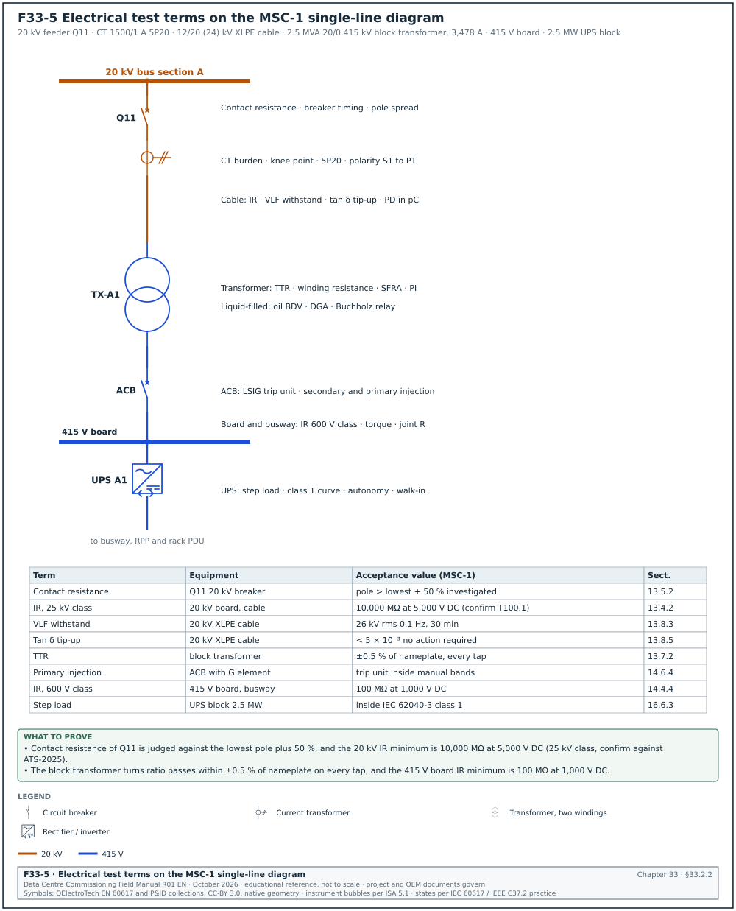
| Term | Full term | Definition | Section |
|---|---|---|---|
| Back-fill | back-fill of EPMS data | Upload of logged records from a meter's onboard memory to the server after a communication gap, so that the 72-hour completeness check can pass. | 24.13 |
| BACnet | Building Automation and Control networks | ANSI/ASHRAE 135 data communication protocol for building automation, carried over IP, MS/TP or Secure Connect. | 21.2 |
| BACnet/SC | BACnet Secure Connect | BACnet data link that runs over TLS-secured WebSocket connections through a hub, with a certificate for each device. | 21.6 |
| BAS | building automation system | Another name for the BMS used in some standards and contracts. | 21.12.1 |
| BBMD | BACnet broadcast management device | Device that forwards BACnet broadcasts between IP subnets using a broadcast distribution table. | 21.4 |
| BCxA | Building Commissioning Association | Professional association for commissioning providers that publishes guidance and certifications. | 01.3 |
| BDT | broadcast distribution table | List of BBMD addresses that receive forwarded BACnet broadcasts. | 21.2.2 |
| BDV | breakdown voltage (dielectric) | Voltage at which a sample of transformer oil breaks down between test electrodes, measured to ASTM D1816 or IEC 60156. | 13.7.7 |
| BECx | building enclosure commissioning | Commissioning process for the building envelope. | 01.3 |
| BEI | baseline execution index | DCMA schedule metric: tasks completed divided by tasks planned to be complete by the data date. | 11.7.6 |
| BESS | battery energy storage system | Large battery installation connected to the grid side of the campus; MSC-1 has two units of 10 MWh. | 25.0 |
| BG 29 | BSRIA BG 29/2021 | BSRIA guide to pre-commission cleaning of pipework systems; its Table 4 gives the water-quality values after cleaning. | 18.4 |
| BG 49 | BSRIA BG 49/2024 | BSRIA guide to commissioning air systems, used for balancing grilles and tiles proportionally. | 19.5 |
| BIBB | BACnet interoperability building block | Defined set of BACnet services that a device supports, for example data sharing or alarm and event management. | 21.3.5 |
| BI, BO | binary input, binary output | Point types for two-state signals such as pump status (BI) or a start command (BO). | 21.9 |
| BIM | building information modelling | Use of a shared 3D model with data for design, construction and asset handover. | 04.2 |
| BMS | building management system | Control and monitoring system for mechanical plant, cooling, leak detection and environmental points. | 21.1 |
| BOD | basis of design | Designer's document that explains how the design meets the OPR, with the assumptions, calculations and failure narratives. | 03.3 |
| Bonding | equipotential bonding | Connection of metal parts to the earthing system so that they stay at the same potential. | 17.5 |
| Breaker timing | breaker timing test | Measurement of opening and closing times of each pole and the pole spread with a timing analyser. | 13.5.3 |
| BSRIA | Building Services Research and Information Association | UK body that publishes building services guides, including BG 29 and BG 49. | 01.3 |
| BTL | BACnet Testing Laboratories | Body that tests and lists BACnet products against device profiles. | 21.3 |
| Buchholz relay | Buchholz relay | Gas and oil-flow relay on a liquid-filled transformer that alarms on gas and trips on a fast oil surge. | 13.7.9 |
| Burden | burden of a CT or VT | Load connected to the secondary of an instrument transformer, in VA or ohms, including relay inputs and wiring. | 13.6.2 |
| Busway | busway (busbar trunking) | Prefabricated enclosed busbar system that distributes power along a data hall to tap-off units. | 14.5 |
33.2.3Terms starting with C
| Term | Full term | Definition | Section |
|---|---|---|---|
| C&E | cause-and-effect matrix | Table that lists each fire alarm input against the outputs it must operate, with the timing; the master record for fire integration tests. | 20.9 |
| C01, P01 | contractual and preliminary revision codes | ISO 19650 revision codes: P01 is a preliminary revision, C01 a contractual revision. | 04.3 |
| CAN | controller area network | Serial bus used inside engine and generator controllers, for example SAE J1939. | 15.6.4 |
| CAPA | corrective and preventive action | Quality process that removes the cause of a nonconformity and prevents its repeat. | 09.0 |
| CAR | corrective action request | Record raised when a nonconformity repeats, a hold point is bypassed or an NCR is major; it requires a root-cause analysis. | 09.7 |
| CBEMA | Computer and Business Equipment Manufacturers Association curve | Voltage tolerance curve for IT equipment, replaced by the ITI curve. | 17.11.2 |
| CCD | construction change directive | AIA instrument that directs a change before price and time are agreed. | 08.7 |
| CCTV | closed-circuit television | Camera system recorded by a video management system for security monitoring. | 27.7 |
| CDE | common data environment | Single agreed repository and workflow for project information under ISO 19650, with work in progress, shared, published and archived states. | 04.2 |
| CDU | coolant distribution unit | Unit with pumps, a heat exchanger and controls that transfers heat from the TCS to the FWS and supplies coolant to racks. | 19.8 |
| CE | compensation event | NEC4 event that entitles the contractor to an assessment of time and cost. | 08.6 |
| CFCI | contractor-furnished, contractor-installed | Delivery model in which the general contractor buys and installs the equipment. | 02.11 |
| Channel | channel (copper cabling) | Permanent link plus patch cords, maximum 100 m. | 26.4 |
| Churn pressure | churn pressure of a fire pump | Pressure at zero flow; NFPA 20 limits it to 140 % of rated net pressure. | 20.8.1 |
| CHW | chilled water | Water cooled by chillers for air-side coils; on MSC-1 the CRAH coils use 18 °C supply. | 18.0 |
| Class 1 dynamic curve | IEC 62040-3 dynamic output class 1 | The tightest UPS output tolerance curve for mode changes and load steps, required for double-conversion units (VFI-SS-111). | 16.2.3 |
| Class X | NFPA 110 Class X | Run time at rated load without refuelling set by the code or the user; 24 hours on MSC-1. | 15.2.2 |
| Clean agent | clean agent | Extinguishing gas that leaves no residue, for example FK-5-1-12, HFC-227ea or inert gas IG-541. | 20.6 |
| Closed transition | closed-transition transfer | Transfer in which both sources are paralleled for a short overlap, commonly 100 ms or less, so that the load sees no break. | 16.8.1 |
| CM | construction manager | Person who manages the construction programme for the general contractor or the owner; the counterpart of the CxM on site. | 02.8 |
| CMMS | computerised maintenance management system | System that holds the asset register, PM schedules and work orders. | 27.4 |
| CO | change order | Signed agreement that changes the contract scope, price or time. | 08.2 |
| CO (gas) | carbon monoxide | Combustion gas measured in generator exhaust and in room air during a fire test; second meaning beside change order. | 15.7.1 |
| Coincidence detection | coincidence (double knock) detection | Rule that requires two independent detectors in alarm before a gas release or pre-action valve opens. | 20.6 |
| Colour tag | colour tag practice | Physical tag colour that shows the commissioning level an item has passed, checked at each gate. | 02.6 |
| Commissioning level | commissioning level L0 to L6 | Stage in the commissioning process from design review (L0) through FAT (L1), installation (L2), start-up (L3), functional test (L4), IST (L5) to turnover (L6). | 02.3 |
| Contact resistance | contact resistance | DC resistance across a closed breaker pole or bolted joint, measured with a DLRO at 100 A or more. | 13.5.2 |
| Containment | aisle containment | Panels and doors that separate hot and cold aisles; leakage is tested by pressurising the aisle. | 19.6 |
| COP | continuous operating power | ISO 8528-1 rating for a constant load for unlimited hours. | 15.2.1 |
| COV | change of value | BACnet service that sends a value when it changes by more than a set increment. | 21.3.2 |
| CPLI | critical path length index | DCMA metric: (critical path length plus total float) divided by critical path length. | 11.7.6 |
| CR | as-built record status | ISO 19650 status used in the project register for as-built records. | 04.3 |
| CRAH | computer room air handler | Air handler with a chilled-water coil and fans that cools a data hall. | 19.3 |
| Crank cycle | crank cycle | Programmed sequence of crank and rest periods; after the set number of attempts the controller raises an overcrank alarm. | 15.9.2 |
| CRC | cyclic redundancy check | Error check on each frame; rising CRC counts on an MS/TP trunk point to wiring or termination faults. | 21.5.4 |
| CT | current transformer | Instrument transformer that gives a secondary current proportional to the primary current for meters and relays. | 13.6 |
| CUSUM | cumulative sum chart | Control chart that adds deviations from a target to detect a small sustained shift in a trend. | 30.9 |
| CVI | confirmation of verbal instruction | Written record sent by the contractor to confirm an instruction given orally on site. | 08.4 |
| CVSS | Common Vulnerability Scoring System | Score from 0 to 10 for a published vulnerability; MSC-1 accepts no open CVSS ≥ 9.0 without a compensating control. | 27.13 |
| Cx | commissioning | Quality process that verifies the systems meet the owner's requirements, from design review to handover. | 01.3 |
| CxA | commissioning authority (or commissioning agent) | Independent party that writes or reviews commissioning documents and witnesses tests. | 02.8 |
| CxM | commissioning manager | Person who manages the commissioning programme for the owner or the general contractor. | 02.8 |
33.3Glossary D to H
33.3.1Terms starting with D
Figure F33-6 places the cooling terms (FWS, TCS, CHW, ATD, flushing velocity, TVC, QD) on a fragment of the MSC-1 liquid-cooling piping and instrumentation diagram (P&ID) with their MSC-1 values.

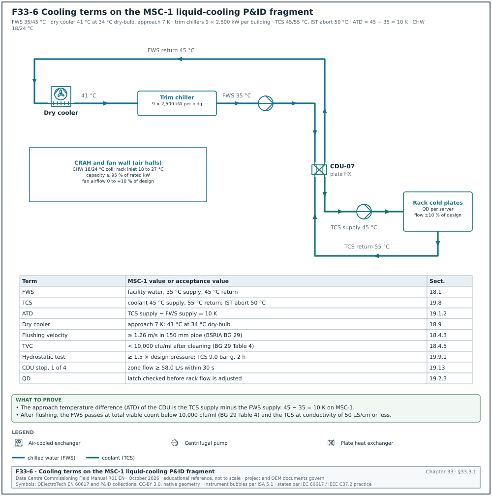
| Term | Full term | Definition | Section |
|---|---|---|---|
| DAR | dielectric absorption ratio | Insulation resistance at 60 s divided by the value at 30 s; 1.25 or more is the common practice value. | 13.4.4 |
| DCC, DCP | data-centre continuous and data-centre power ratings | Generator manufacturer ratings for unlimited hours at variable or constant load in data-centre service. | 15.2.1 |
| DCE | Data Center Expert | Schneider EcoStruxure IT server that discovers and polls devices for DCIM. | 27.1.3 |
| DCIM | data centre infrastructure management | Software that holds the assets, space, power and cooling capacity of the data centre and reads live values from BMS and EPMS. | 27.1 |
| DCMA | Defense Contract Management Agency | US agency whose 14-point check assesses schedule quality. | 11.7.6 |
| DCN | design change notice | Designer's document that issues a change to the design documents. | 08.13 |
| DCOps | data-centre operations team | The owner's operating staff who accept the systems at handover. | 02.8 |
| DDC | direct digital control | Control by programmable digital controllers. | 21.1 |
| DDF | device definition file | DCIM file that maps an SNMP or Modbus device's data points. | 27.1.3 |
| DDM | digital diagnostic monitoring | Transceiver function that reports optical receive and transmit power. | 29.13 |
| Dead bus | dead bus | De-energised busbar; the first generator closes onto the dead bus before the others synchronise. | 15.9.1 |
| Dead zone | dead zone of an OTDR | Distance after a reflective event in which the OTDR cannot resolve another event; the launch cord moves it off the first connector. | 26.9.3 |
| Debounce | debounce delay | Input filter time that a contact must hold before the controller accepts the change, for example 1 s on a CDU leak input. | 25.8.2 |
| Deferred test | deferred test | Test that cannot be done before handover, for example a seasonal test, recorded with a date and an owner. | 09.9 |
| Design concentration | design concentration of a clean agent | Agent concentration by volume that the system must reach in the protected room, for example 4.5 % FK-5-1-12 in room B2-ER-03. | 20.6.2 |
| Device instance | BACnet device instance | Number that identifies a BACnet device uniquely across the whole internetwork. | 21.4 |
| DGA | dissolved gas analysis | Laboratory analysis of gases in transformer oil used as the baseline for condition monitoring. | 13.7.7 |
| Disposition | NCR disposition | Decision on a nonconforming item: use as is, repair, rework or reject. | 09.6 |
| DLP | defects liability period | Period after completion during which the contractor must correct defects. | 12.11 |
| DLRO | digital low-resistance ohmmeter | Micro-ohmmeter that injects 10 A to 600 A DC to measure contact and joint resistance. | 13.3.1 |
| DMZ | demilitarised zone | Network zone between the OT network and the corporate network that holds servers both sides may reach. | 23.2.2 |
| DNP | Defects Notification Period | FIDIC term for the period after taking-over in which the Employer may notify defects. | 09.12 |
| Door fan test | door fan (room integrity) test | Test that pressurises a clean-agent room with a calibrated fan to find its leakage area and predict the agent hold time. | 20.6.3 |
| DP | differential pressure; dew point | Pressure difference across a pump, filter or rack loop; in the ASHRAE tables DP is the dew point temperature. | 18.11, 19.2 |
| Droop | frequency droop | Fall in generator frequency from no load to full load, as a percentage; ISO 8528-5 class G3 allows 3 % or less. | 15.2.3 |
| Dry cooler | dry cooler | Air-cooled heat exchanger with fans that rejects FWS heat to outside air, with optional adiabatic pre-cooling. | 18.9 |
| DSE | Deep Sea Electronics | Manufacturer of generator and synchronising controllers. | 15.13.2 |
| Dynamic flush | dynamic flush | Flush that circulates water at or above the minimum flushing velocity, section by section, to move debris. | 18.4.2 |
33.3.2Terms starting with E
| Term | Full term | Definition | Section |
|---|---|---|---|
| Early warning | NEC4 early warning | NEC4 notice that a matter could increase cost, delay completion or impair performance. | 08.6 |
| EC | electronically commutated motor | Permanent-magnet motor with integrated speed control used in fan walls and CRAH fans. | 19.3.1 |
| ECC | Engineering and Construction Contract | The main NEC4 contract form. | 08.6 |
| ECN | engineering change notice | Supplier or manufacturer notice of a change to a product or drawing. | 05.2 |
| EF, ES, LF, LS | early finish, early start, late finish, late start | Schedule dates calculated by the forward and backward pass of the critical path method. | 11.7.5 |
| EHS | environment, health and safety | Function responsible for site safety rules and permits. | 02.8 |
| ELA | equivalent leakage area | Single area that represents all leaks of a room, calculated from the door fan test. | 20.6.3 |
| ELC | electrical loss component | ASHRAE 90.4 measure of the losses in the electrical distribution between the utility and the IT equipment. | 01.4 |
| End-face inspection | end-face inspection | Inspection of a fibre connector end face with a video probe against the IEC 61300-3-35 zones before mating or testing. | 26.7 |
| End voltage | end-of-discharge voltage | Battery voltage per cell at which a capacity test or discharge stops, for example 1.67 V per cell for a VRLA test. | 16.7.3 |
| Energisation certificate | energisation certificate | Signed record that a section of the system is released for energisation after the ERB gate checks. | 10.5 |
| Engineered loss budget | engineered loss budget | Fibre loss limit calculated from the manufacturer's low-loss component values; it is lower than the TIA maximum budget. | 26.5.3 |
| EOP | emergency operating procedure | Operations procedure for a failure event, validated during L4 and IST. | 12.5 |
| EoR | engineer of record | Designer responsible for the design and its interpretation. | 01.2 |
| EOT | extension of time | Contractual adjustment of the completion date. | 08.8 |
| EPMS | electrical power monitoring system | System of meters, relays, gateways and server software that monitors the electrical network. | 23.1 |
| EPO | emergency power off | Manual control that removes power from a room or equipment in an emergency. | 20.10 |
| EPSS | emergency power supply system | NFPA 110 term for the generator, transfer switches and controls that supply emergency loads. | 15.2.2 |
| ERB | energisation readiness board | Meeting and gate that decides whether a section of the system may be energised. | 10.5 |
| ERMS | energy reduction maintenance setting | Breaker trip-unit mode that lowers the instantaneous pick-up during maintenance work to reduce arc-flash energy. | 24.8 |
| ESDM | Kementerian Energi dan Sumber Daya Mineral | Indonesian Ministry of Energy and Mineral Resources, which regulates the SLO. | 10.7 |
| ESP | emergency standby power | ISO 8528-1 rating for a variable load during a utility outage, with limited annual hours. | 15.2.1 |
| ESWC | electrically safe work condition | NFPA 70E state in which a circuit is isolated, locked, tested for absence of voltage and earthed where needed. | 10.2 |
| EWFD | early warning fire detection | NFPA 76 detection class with a maximum transport time of 90 s. | 20.4.2 |
| Excitation curve | excitation (saturation) curve of a CT | Plot of secondary voltage against magnetising current; its knee point must exceed the value in the protection study. | 13.6.2 |
33.3.3Terms starting with F
Figure F33-7 shows the BMS, EPMS and network terms on one block diagram: the MS/TP trunk limits, the meter accuracy classes, the SOE time source and the MRP ring limit.

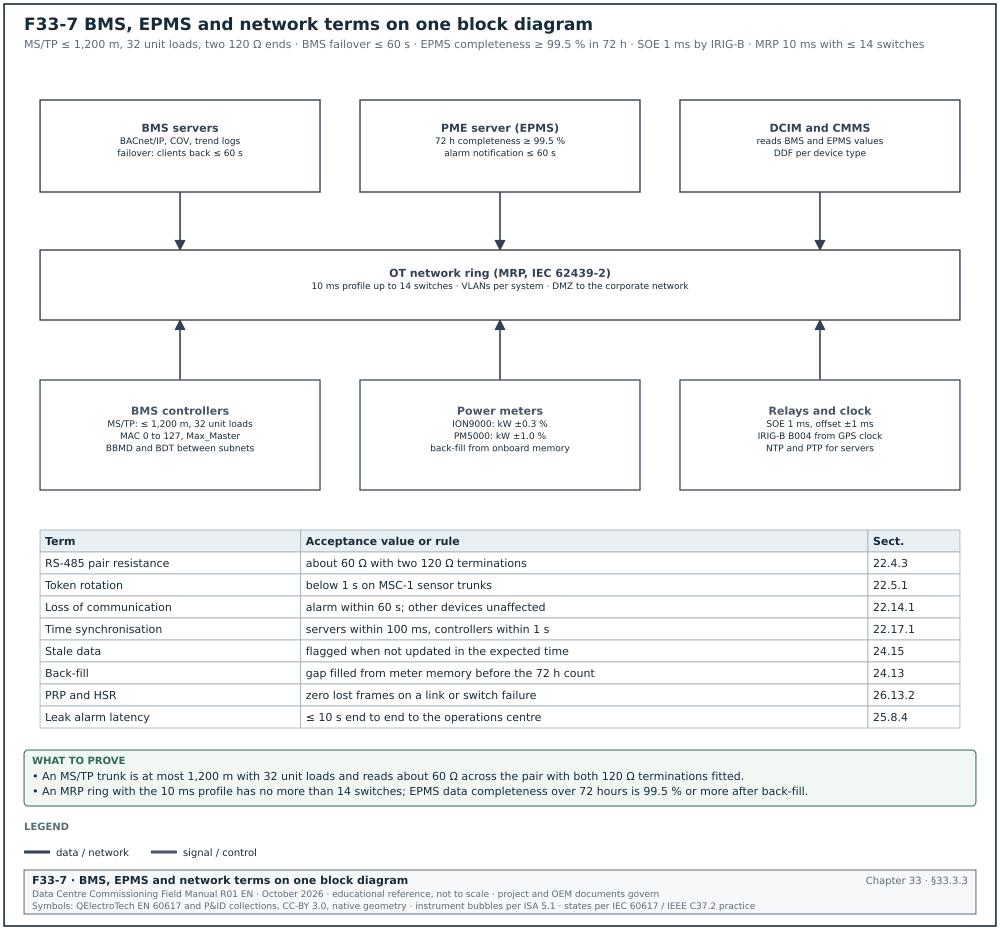
| Term | Full term | Definition | Section |
|---|---|---|---|
| FACP | fire alarm control panel | Panel that receives detector signals, raises alarms and drives the cause-and-effect outputs. | 20.2 |
| Fall-of-potential method | fall-of-potential method | IEEE 81 method that measures earth electrode resistance with a current probe and a potential probe placed at 61.8 % of the distance. | 17.3 |
| FAME | fatty acid methyl ester | Biodiesel component blended into diesel fuel under the Indonesian mandate. | 15.5.5 |
| Fan wall | fan wall | Array of EC fans with a coil that supplies air across the full width of a data hall. | 19.3 |
| FAS | fire alarm system | Detectors, panels, notification appliances and interfaces for fire detection and alarm. | 20.1 |
| FAT | factory acceptance test | Test of equipment at the manufacturer's works against its specification before shipment (L1). | 03.6 |
| FF, FS, SS | finish-to-finish, finish-to-start, start-to-start | Logic link types between schedule activities. | 11.7.4 |
| FHO | final handover | Handover at the end of the maintenance or defects period in Indonesian contracts. | 09.12 |
| FIDIC | Fédération Internationale des Ingénieurs-Conseils | International federation that publishes standard contract forms such as the 2017 Red Book. | 08.5 |
| First-pass yield | first-pass yield (FPY) | Tests passed at the first attempt divided by tests with a completed first attempt, in per cent; MSC-1 target 90 %. | 30.3 |
| FK-5-1-12 | fluoroketone clean agent | Clean agent with a NOAEL of 10 % that absorbs heat and interrupts combustion. | 20.6 |
| Float voltage | float voltage | Constant charging voltage that keeps a battery fully charged. | 16.7.4 |
| Flushing velocity | minimum flushing velocity | Water velocity needed to move debris during a dynamic flush, given by BG 29 for each pipe size, for example 1.26 m/s for 150 mm. | 18.4.3 |
| FM-200 | HFC-227ea clean agent | Halocarbon clean agent with a NOAEL of 9 %. | 20.6 |
| FO | fibre optic | Cable that carries data as light. | 26.4 |
| FPT | functional performance test | L4 test of a system's functions, sequences, alarms and failure responses at defined load. | 03.9 |
| FWS | facility water system | Water loop between the heat rejection plant and the CDU heat exchangers. | 18.1 |
33.3.4Terms starting with G
| Term | Full term | Definition | Section |
|---|---|---|---|
| G1, G2, G3 | ISO 8528-5 performance classes | Generator transient performance classes; G3 is the tightest and is used for data-centre loads. | 15.2.3 |
| Gainer | gainer (OTDR) | Apparent gain at a splice between fibres with different backscatter; bidirectional averaging gives the true loss. | 26.9.5 |
| Gas tightness check | gas tightness check | Low-pressure dry nitrogen test of a TCS manifold before the hydrostatic test. | 19.9.1 |
| GC | general contractor | Contractor that holds the main construction contract and builds and installs the works. | 02.8 |
| Ghost | ghost (OTDR) | False reflection on an OTDR trace caused by a strong reflective event. | 26.9.5 |
| GPS | Global Positioning System | Satellite time source for the master clock of the EPMS and BMS. | 23.7 |
| GST | grounded specimen test | Insulation power factor test mode that measures current to earth. | 13.7.5 |
33.3.5Terms starting with H
| Term | Full term | Definition | Section |
|---|---|---|---|
| H1 class | ASHRAE class H1 | Air class for high-density equipment with a recommended range of 18 to 22 °C. | 19.2.1 |
| Heartbeat | communication heartbeat | Counter that a device increments at a fixed interval so the receiving system can detect a lost link. | 22.6 |
| Heat emulator | heat emulator (rack load bank) | Electric load with a liquid or air heat exchanger that simulates IT heat for L4 and IST. | 28.6 |
| HFCT | high-frequency current transformer | Sensor clamped on cable screen earths for online PD measurement. | 13.9.2 |
| Hold point | hold point | ITP point beyond which work may not proceed until the named party has inspected and released it. | 07.2 |
| Hold time | hold time of a clean agent | Time for which the agent concentration at the protected height stays above the minimum; the predicted hold time must be 10 minutes or more. | 20.6.3 |
| HSR | HSR ring redundancy protocol (IEC 62439-3) | IEC 62439-3 ring protocol that sends each frame in both directions, giving zero recovery time. | 26.2 |
| HVAC | heating, ventilation and air conditioning | Mechanical systems that condition air. | 01.6 |
| Hydrostatic test | hydrostatic pressure test | Pressure test of pipework filled with water, at 1.5 times the design pressure or more for ASME B31.9. | 18.3 |
33.4Glossary I to M
33.4.1Terms starting with I
| Term | Full term | Definition | Section |
|---|---|---|---|
| I/O | input and output | Field signals connected to a controller. | 15.3.3 |
| ICD | interface control document | Document that defines one interface: the parties, signals, protocol, map, tests and owner. | 25.3 |
| ICS | industrial control systems | Control systems for physical processes; in a data centre BMS, EPMS and fire systems. | 27.9 |
| Icu, Icw | rated ultimate breaking capacity, rated short-time withstand current | Breaker and switchboard short-circuit ratings that must exceed the prospective fault current. | 14.1.1 |
| IEC | International Electrotechnical Commission | International standards body for electrical and electronic technology. | 01.5 |
| IEEE | Institute of Electrical and Electronics Engineers | Professional body that publishes standards such as IEEE 450, IEEE 519 and IEEE 400.2. | 01.5 |
| IG-541 | inert gas agent IG-541 | Mixture of nitrogen, argon and carbon dioxide that extinguishes fire by lowering the oxygen concentration. | 20.6.1 |
| IGBT | insulated-gate bipolar transistor | Power semiconductor used in active-front-end UPS rectifiers and inverters. | 16.6.8 |
| Inrush | inrush current | High current drawn when a transformer is energised; it can cause a voltage dip on the network. | 17.11.3 |
| Insulation resistance | insulation resistance (IR) | Resistance of insulation measured with a DC test voltage for 1 minute, in MΩ or GΩ. | 13.4 |
| Interlock | interlock | Mechanical or electrical arrangement that prevents an unsafe operation, for example closing two incomers onto one bus. | 14.8 |
| IOR | index of refraction | Fibre property set in the OTDR to convert time to distance, about 1.468 at 1310 nm for standard single-mode. | 26.9.2 |
| IR | insulation resistance; inspection request | In electrical tests, the insulation resistance; in quality administration, the notice that asks the inspector to attend a hold or witness point. | 13.4, 07.5 |
| IRIG-B | Inter-Range Instrumentation Group time code B | Time code (B004 format on MSC-1) that synchronises SOE-grade meters and relays to 1 ms. | 23.7 |
| Isc | prospective short-circuit current | Current that flows in a bolted fault at a point of the network. | 14.1.1 |
| ISC/IL | short-circuit ratio | Available short-circuit current divided by maximum demand load current at the PCC; it selects the IEEE 519 current distortion row. | 17.10.3 |
| ISO | International Organization for Standardization | International standards body, for example ISO 8528-5 and ISO 19650. | 01.5 |
| IST | integrated systems test | L5 test of all systems together through normal, maintenance and failure scenarios at design load. | 28.1 |
| IT | information technology | Servers, storage and network equipment in the data halls. | 15.1 |
| ITE | information technology equipment | ASHRAE term for the IT equipment. | 19.2.1 |
| ITI (ITIC) curve | Information Technology Industry Council curve | Voltage tolerance envelope for IT power supplies: 0 % for 20 ms, 70 % to 0.5 s, 80 % to 10 s and 90 % beyond. | 17.11.2 |
| ITIC | Information Technology Industry Council | Publisher of the ITIC (CBEMA) curve that gives the voltage-dip and swell tolerance of IT equipment. | 17.0 |
| ITP | inspection and test plan | Document that lists each inspection and test with its acceptance value, record and intervention point for each party. | 07.1 |
| IΔn | rated residual operating current | The residual current at which an RCD must trip, for example 30 mA. | 14.7.2 |
33.4.2Terms starting with J
| Term | Full term | Definition | Section |
|---|---|---|---|
| JDIH | Jaringan Dokumentasi dan Informasi Hukum | Indonesian government legal documentation portal for laws and regulations. | 01.14 |
| JSA | job safety analysis | Step-by-step hazard analysis for one task. | 06.9 |
33.4.3Terms starting with K
| Term | Full term | Definition | Section |
|---|---|---|---|
| K3 | Keselamatan dan Kesehatan Kerja | Indonesian occupational safety and health; the Ahli K3 Listrik is the certified electrical safety expert. | 10.7 |
| Knee point | knee point of a CT | Point on the excitation curve where a 10 % rise in voltage gives a 50 % rise in magnetising current. | 13.6.2 |
| KPI | key performance indicator | Defined measure with a formula and a target used to report progress or quality. | 30.3 |
33.4.4Terms starting with L
Figure F33-8 shows the commissioning levels L0 to L6, the documents and time limits of each level and the record of each level for the UPS block B2-DH3-A1.

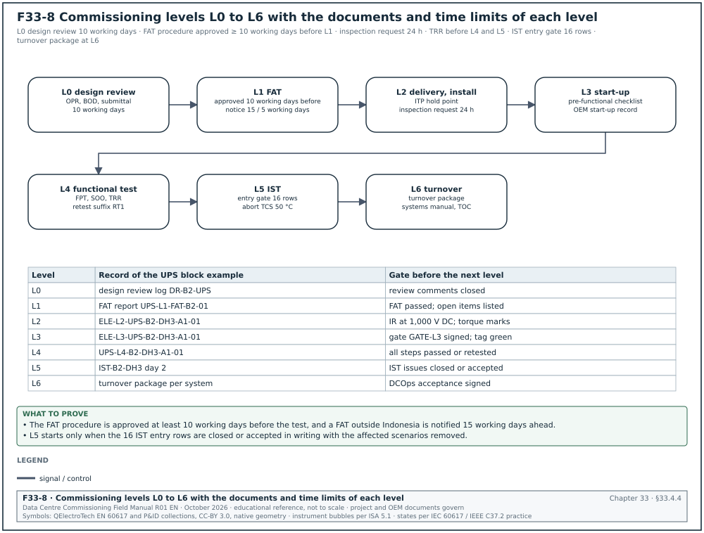
| Term | Full term | Definition | Section |
|---|---|---|---|
| L1 to L6 | commissioning levels | L1 factory acceptance, L2 delivery and installation (L2A delivery, L2B installation), L3 start-up and pre-functional, L4 functional test, L5 IST, L6 turnover. | 02.3 |
| Launch cord | launch cord | Fibre cord of 500 m to 1 km (single-mode) between the OTDR and the link so the first connector can be measured. | 26.9.2 |
| LC | LC connector | Small form-factor single-fibre connector. | 26.4 |
| Leak detection cable | leak detection cable | Sensing cable that detects water along its length and reports the distance to the leak. | 19.12.1 |
| LFL | lower flammable limit | Lowest gas concentration in air that can burn; confined space entry needs below 10 % of LFL. | 10.1 |
| LFP | lithium iron phosphate | Lithium-ion chemistry with a 3.2 V nominal cell used in UPS batteries. | 16.7.1 |
| LIT | Lembaga Inspeksi Teknik | Accredited technical inspection body that inspects installations for the SLO. | 10.7 |
| Load bank | load bank | Resistive or resistive-reactive test load that applies defined kW to a generator, UPS or busway. | 15.7 |
| Load sharing | load sharing | Division of kW and kvar between parallel generators; ISO 8528-5 values are ±5 % between 80 % and 100 % load. | 15.10.5 |
| Loss budget | loss budget | Calculated maximum optical loss of a fibre link from cable length, connector pairs and splices. | 26.5 |
| LOTO | lockout/tagout | Procedure that isolates energy sources, applies personal locks and tags, and proves the isolation before work. | 10.2 |
| LPL | lightning protection level | IEC 62305 level I to IV that sets the rolling sphere radius and down-conductor spacing. | 17.6 |
| LPS | lightning protection system; Last Planner System | In earthing work, the air terminals, down conductors and earth termination; in planning, the collaborative weekly planning method that reports PPC. | 17.6, 11.8 |
| LSI | long-time, short-time, instantaneous | The three protection functions of an electronic trip unit; LSIG adds ground fault. | 14.6.1 |
| LSIG | long-time, short-time, instantaneous and ground protection | Functions of an electronic breaker trip unit. | 14.6.1 |
| LTP | limited-time running power | ISO 8528-1 rating for a limited number of hours per year. | 15.2.1 |
| LV | low voltage | Voltage up to 1,000 V AC; 415 V on MSC-1. | 14.1 |
33.4.5Terms starting with M
| Term | Full term | Definition | Section |
|---|---|---|---|
| M&TE | measuring and test equipment | Instruments used for tests, controlled by a calibration register. | 07.8 |
| MAC | medium access control address | Data link address; on MS/TP masters use 0 to 127. | 21.5.1 |
| Maintenance bypass | maintenance bypass | Switch or breaker path that feeds the load around the UPS so the UPS can be isolated without a break. | 16.6.6 |
| Manual call point | manual call point | Wall-mounted device that a person operates to raise a fire alarm. | 20.3.2 |
| MAR | material approval request | Submittal that asks approval of a product or material before purchase. | 06.7 |
| Mated connector pair | mated connector pair | Two fibre connectors joined in an adapter; ANSI/TIA-568.3-E allows 0.75 dB maximum per pair (value as in -D, Fluke reproduction). | 26.5.1 |
| Max_Master | BACnet Max_Master property | Highest MAC address an MS/TP master polls for; set to the highest master MAC on the trunk. | 21.5.1 |
| MBB | maintenance bypass breaker | Breaker that closes the maintenance bypass path of a UPS. | 10.4.6 |
| MCB | miniature circuit breaker | Small moulded breaker for final circuits, rated to about 125 A, without adjustable settings. | 10.2.6 |
| MCC | motor control centre (mechanical control centre on MSC-1) | Switchboard that feeds and controls mechanical loads; MSC-1 meters each with a PM5000. | 23.15 |
| MCCB | moulded-case circuit breaker | Low-voltage breaker in a moulded insulating case for feeders up to about 1,600 A. | 14.6 |
| MDA | main distribution area | Room that holds the main cross-connect of the structured cabling. | 07.12 |
| MDF | main distribution frame | Main patch panel location of a building network. | 26.5 |
| MEC | minimum extinguishing concentration | Lowest agent concentration that extinguishes a test fire. | 20.6.2 |
| MEP | mechanical, electrical and plumbing | The building services disciplines. | 02.8 |
| MET | main earthing terminal | Terminal or bar that connects the protective conductors, bonding conductors and earth electrode. | 17.1 |
| Method statement | method statement | Document that describes how a task is done, step by step, with resources and checks. | 06.9 |
| MIB | management information base | Set of SNMP objects a device exposes, each with an OID. | 21.8.2 |
| MIL | master interface list | Register of every interface on the campus with its ID, parties, type and status. | 25.2 |
| MLC | mechanical load component | ASHRAE 90.4 measure of the cooling energy relative to IT energy. | 19.15 |
| MM, SM | multimode, single-mode | Fibre types: 50/125 µm multimode (OM3, OM4, OM5) and 9/125 µm single-mode (OS2). | 26.4 |
| MOB | module output breaker | Breaker at the output of one UPS module. | 10.4.6 |
| MOP | method of procedure | Step-by-step operations procedure for a planned operation on live plant. | 12.5 |
| MPO | multi-fibre push-on connector | Connector with 8, 12 or more fibres in one ferrule used on trunk cables. | 26.4 |
| MRM, MRC | media redundancy manager, media redundancy client | MRP roles: the manager blocks one ring port in normal state and opens it on a ring fault. | 26.2.2 |
| MRP | Media Redundancy Protocol | IEC 62439-2 ring protocol with worst-case recovery times of 500, 200, 30 or 10 ms by profile. | 26.2 |
| MS/TP | master-slave/token-passing | BACnet data link over RS-485 twisted pair. | 21.5 |
| MSC-1 | MSC-1 worked example campus | The 144 MW example campus used in this manual: 4 buildings, 12 halls of 12 MW, design PUE 1.22. | 02.1 |
| MSRA | method statement and risk assessment | Combined submittal of the method statement and its risk assessment. | 06.9 |
| MTS | Maintenance Testing Specifications (ANSI/NETA MTS) | NETA specification for tests on equipment in service; the companion of the ATS acceptance specification. | 01.12.1 |
| MV | medium voltage | Voltage above 1 kV up to 35 kV; 20 kV on MSC-1. | 13.1 |
33.5Glossary N to R
33.5.1Terms starting with N
| Term | Full term | Definition | Section |
|---|---|---|---|
| NAC | notification appliance circuit | Circuit that powers sounders and strobes. | 20.2 |
| NCR | non-conformance report | Record of work that does not meet a requirement and needs a technical decision. | 09.3 |
| NEBB | National Environmental Balancing Bureau | US body that certifies TAB and commissioning firms and publishes procedural standards. | 19.5 |
| NEC4 | NEC4 contract suite | Contract family published by Thomas Telford; the ECC is the main construction contract. | 08.6 |
| NER | neutral earthing resistor | Resistor between transformer or generator neutral and earth that limits earth fault current. | 13.7.9 |
| NETA | InterNational Electrical Testing Association | Publisher of ANSI/NETA ATS acceptance testing specifications. | 13.0 |
| Network number | BACnet network number | Number that identifies each BACnet network segment; it must be unique. | 21.4 |
| NFPA | National Fire Protection Association | US body that publishes NFPA 70E, 72, 110, 2001 and other codes. | 20.0 |
| NiCd | nickel-cadmium | Battery chemistry with a 1.2 V nominal cell. | 16.7.1 |
| NIDI | Nomor Identitas Instalasi | Indonesian installation identity number issued before the SLO. | 10.7 |
| NMBE | normalised mean bias error | Statistic of the average bias of a model or meter against measured data. | 30.11.7 |
| NMC | nickel manganese cobalt | Lithium-ion chemistry used in some UPS batteries. | 16.7.1 |
| NOAEL | no observed adverse effect level | Highest agent concentration at which no adverse effect on people was observed. | 20.6.2 |
| NOD | Notice of Dissatisfaction | FIDIC notice against a determination, due within 28 days of receiving it. | 08.8 |
| NOx | nitrogen oxides | Engine exhaust pollutant measured in the emissions test, corrected to a reference oxygen level. | 15.12 |
| NTP | Network Time Protocol | IP protocol that synchronises server and controller clocks. | 22.17 |
| NTU | nephelometric turbidity unit | Unit of water turbidity. | 19.10 |
33.5.2Terms starting with O
Figure F33-9 is a decision tree that selects the document for a site question or a defect: RFI, PCO, CVI, inspection request, NCR, CAR or punch item, each with its time limit.

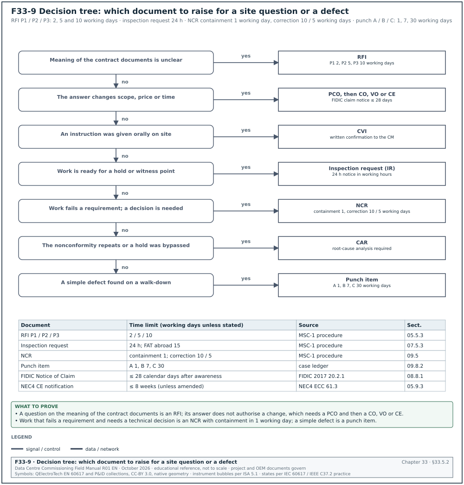
| Term | Full term | Definition | Section |
|---|---|---|---|
| OCP | Open Compute Project | Industry organisation that publishes CDU and liquid-cooling guidance. | 19.8 |
| OEM | original equipment manufacturer | Manufacturer of the equipment, who runs the FAT and the start-up. | 02.8 |
| OFCI | owner-furnished, contractor-installed | Delivery model in which the owner buys the equipment and the contractor installs it. | 02.11 |
| Ohmic measurement | ohmic measurement | Internal resistance, impedance or conductance reading of a battery cell used as a trend. | 16.7.4 |
| OID | object identifier | Address of one SNMP object in the MIB. | 21.2.1 |
| OLTS | optical loss test set | Light source and power meter that measure insertion loss of a fibre link (Tier 1). | 26.8 |
| O&M | operation and maintenance | Manuals and information for operating and maintaining the systems. | 12.4 |
| OM3, OM4, OM5 | multimode fibre classes | Laser-optimised 50/125 µm multimode fibres with increasing bandwidth. | 26.4 |
| OPC UA | Open Platform Communications Unified Architecture | Platform-independent protocol with security for industrial data exchange. | 21.8 |
| OPR | owner's project requirements | Owner's document that states the functions, performance and criteria the project must meet. | 03.2 |
| OS2 | single-mode fibre class OS2 | Low water peak single-mode fibre for indoor-outdoor and campus links. | 26.4 |
| OT | operational technology | Networks and systems that monitor and control physical equipment. | 26.1 |
| OTDR | optical time-domain reflectometer | Instrument that sends light pulses into a fibre and shows the backscatter trace with events and distances (Tier 2). | 26.9 |
| Overcrank | overcrank shutdown | Controller shutdown after the set number of crank attempts without a start. | 15.6.2 |
| Overlap time | overlap time | Time both sources are closed in a closed transition; the overlap timer trips a breaker if it is exceeded. | 15.10.6 |
| Overshoot | overshoot | Amount by which a controlled value passes its new set point after a step; ≤ 0.3 K for the MSC-1 CDU loop. | 22.9.2 |
33.5.3Terms starting with P
| Term | Full term | Definition | Section |
|---|---|---|---|
| P&ID | piping and instrumentation diagram | Drawing of pipes, valves, instruments and control loops. | 15.5.1 |
| P1, P2, P3 | RFI priority classes | RFI response classes of 2, 5 and 10 working days on MSC-1. | 05.5.3 |
| P2P | point-to-point test | Check of each point from the field device to the graphic, alarm and trend. | 22.6 |
| P6 | Primavera P6 | Oracle scheduling software used for the commissioning schedule. | 11.7 |
| PA | Pengguna Anggaran | Indonesian budget user in government contracts who approves increases above 10 % in emergencies. | 08.18 |
| Partial discharge | partial discharge (PD) | Local electrical discharge that only partly bridges the insulation, measured in pC. | 13.9 |
| Passivation | passivation | Treatment after chemical cleaning that forms a protective layer on clean metal, followed by inhibitor dosing. | 18.4.2 |
| PCB | polychlorinated biphenyl | Banned insulating oil additive; transformer oil is tested for it before disposal or reuse. | 13.7.7 |
| PCC | point of common coupling | Point where the utility network meets the customer network, where IEEE 519 limits apply; 150 kV on MSC-1. | 17.8 |
| PCO | potential change order | Change under evaluation before agreement. | 08.2 |
| PD | partial discharge | See partial discharge. | 13.9 |
| PDAM | Perusahaan Daerah Air Minum | Municipal water company that supplies fill water in Jakarta. | 18.5.2 |
| PDIV, PDEV | PD inception voltage, PD extinction voltage | Voltages at which partial discharge starts on rising voltage and stops on falling voltage. | 13.9.2 |
| PDU | power distribution unit | Rack-mounted unit that distributes power to IT equipment, often with metering. | 16.9 |
| PE | protective earth conductor | Conductor that connects exposed metal parts to the earthing system. | 17.1 |
| PE (cable) | polyethylene | Cable insulation family; second meaning beside protective earth conductor. | 13.8.5 |
| Permanent link | permanent link | Fixed cable between patch panel and outlet, maximum 90 m. | 26.4 |
| Phasing | phasing check | Voltage check between the two sides of an open point to prove like phases before paralleling. | 13.11.2 |
| PHO | provisional handover | Handover at completion in Indonesian contracts that starts the maintenance period. | 09.12 |
| PI | polarisation index | Insulation resistance at 10 minutes divided by the value at 1 minute. | 13.4.4 |
| PICS | protocol implementation conformance statement | Manufacturer's statement of the BACnet objects and services a device supports. | 21.3 |
| PICV | pressure-independent control valve | Control valve that holds flow constant regardless of the differential pressure across it. | 18.4.4 |
| PID | proportional, integral and derivative control | Control algorithm used in BMS loops; tuned by gain and integral time. | 22.9 |
| PIM | project information model | ISO 19650 information model during design and construction. | 04.3 |
| PLC | programmable logic controller | Industrial controller used for plant and generator control. | 15.1.3 |
| PLN | Perusahaan Listrik Negara | Indonesian state electricity utility. | 17.8.2 |
| PM | planned maintenance | Scheduled maintenance task in the CMMS. | 27.5 |
| PME | Power Monitoring Expert | Schneider EcoStruxure server software for the EPMS. | 23.3 |
| PoE | Power over Ethernet | Power supplied to cameras or devices over the data cable. | 27.7 |
| Polarity (fibre) | fibre polarity | Arrangement that connects each transmitter to a receiver; TIA methods A, B and C. | 26.6 |
| Pole spread | pole spread | Difference between the fastest and slowest pole times of a breaker operation. | 13.5.3 |
| PPC | percent plan complete | Tasks completed as planned in the week divided by tasks planned, in per cent; target 80 % or more. | 11.8 |
| PPE | personal protective equipment | Protective clothing and equipment for a task, for example arc-rated clothing. | 06.9 |
| PPK | Pejabat Pembuat Komitmen | Commitment-making official who signs Indonesian government contracts and addenda. | 08.18 |
| PQ | power quality | Voltage and current characteristics such as harmonics, dips, swells, flicker and unbalance. | 17.8 |
| PRD | pressure relief device | Spring-loaded valve on a transformer tank that opens on a pressure rise from an internal fault. | 13.13.2 |
| Pre-action sprinkler | pre-action sprinkler system | Dry sprinkler system in which detection must operate before water enters the pipes; single or double interlock. | 20.7 |
| Pre-functional checklist | pre-functional checklist | L3 checklist completed before a system is functionally tested. | 03.8 |
| Primary injection | primary injection test | Test that passes current through the main circuit to prove CTs, wiring and trip unit together. | 13.10, 14.6.4 |
| PRP | prime rated power; Parallel Redundancy Protocol | In generators, the ISO 8528-1 rating for variable load with unlimited hours; in networks, the IEC 62439-3 protocol that sends each frame over two independent LANs. | 15.2.1, 26.2 |
| Pst, Plt | short-term and long-term flicker severity | Flicker indices over 10 minutes and 2 hours from an IEC 61000-4-15 flickermeter. | 17.12.1 |
| PSU | power supply unit | IT equipment power supply; MSC-1 assumes 96 % efficiency. | 16.1.2 |
| PTP | Precision Time Protocol | IEEE 1588 protocol that synchronises clocks to sub-millisecond accuracy. | 22.17 |
| PTW | permit to work | Written authorisation to do a defined task on a defined system under stated controls. | 10.1 |
| PUE | power usage effectiveness | Total facility energy divided by IT equipment energy over the same period. | 30.11 |
| PUIL 2020 | Persyaratan Umum Instalasi Listrik 2020 (SNI 0225:2020) | Indonesian general requirements for electrical installations. | 10.7 |
| Punch item | punch item | Simple defect found on a walk-down, categorised A, B or C, closed by the responsible trade. | 09.8 |
| PUPR | Kementerian Pekerjaan Umum dan Perumahan Rakyat | Indonesian Ministry of Public Works and Housing. | 07.14 |
33.5.4Terms starting with Q
| Term | Full term | Definition | Section |
|---|---|---|---|
| QA/QC | quality assurance and quality control | Planned activities that prevent defects (QA) and inspections that find them (QC). | 02.8 |
| QD | quick disconnect | Dry-break coupling between the rack manifold and the server cold-plate loop. | 19.2.3 |
| QR | quick response code | Two-dimensional barcode printed on a controlled copy or a tag that links to the record in the common data environment. | 04.9.2 |
33.5.5Terms starting with R
Figure F33-10 lists the five abbreviations with two meanings in this manual (IR, PRP, LPS, DP and A3) and the clue in a record that shows which meaning applies.

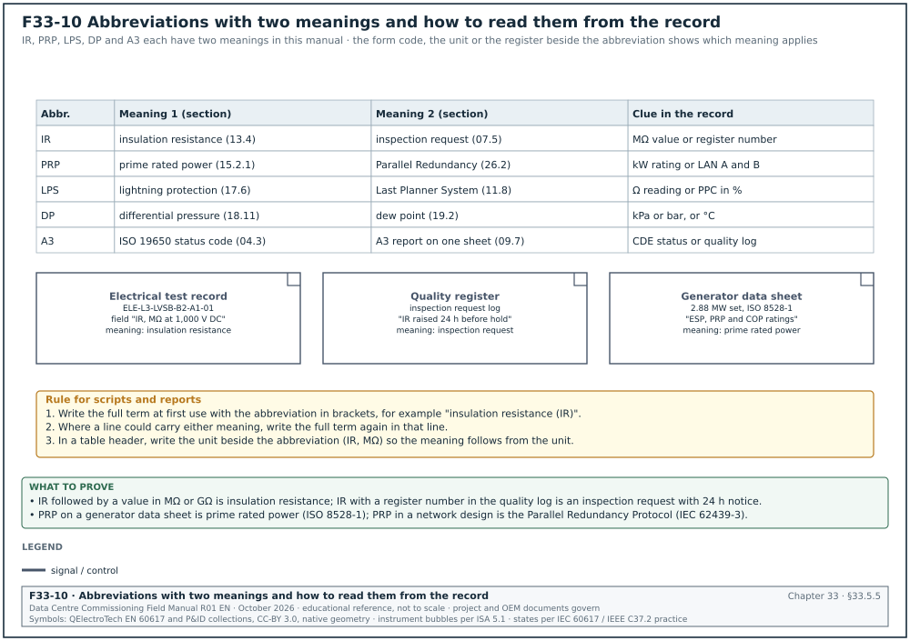
| Term | Full term | Definition | Section |
|---|---|---|---|
| RACI | responsible, accountable, consulted, informed | Matrix of roles for each task or document. | 02.9 |
| RAMS | risk assessment and method statement | Another name for the MSRA. | 06.9 |
| Rate of change | inlet temperature change (ASHRAE TC 9.9) | Limit on the change of IT inlet temperature: 5 K in any 15 minutes and 20 K in any 1 hour, measured as the maximum minus the minimum inlet temperature in the window. | 19.14.5 |
| RCD | residual current device | Device that trips when the residual current reaches IΔn. | 14.7 |
| RDF | Resource Description Framework | Data model of subject, predicate and object triples used to describe assets and documents in a common data environment. | 01.8 |
| Recommended range | recommended range (ASHRAE TC 9.9) | Inlet air range of 18 to 27 °C for long-term operation of IT equipment. | 19.2.1 |
| Redline | redline | Mark-up on a controlled copy that records a change made on site, signed by the witness and contractor. | 04.10 |
| Reflectance | reflectance | Ratio of reflected light to incident light at a connector, in negative dB; a dirty connector gives high reflectance. | 26.9 |
| Retest | retest | Repeat of a failed test after correction, recorded as a new record with suffix RT1. | 03.17 |
| Reverse power | reverse power protection (32) | Generator protection that trips when power flows into the set, set at 5 % of rated kW for 5 s on MSC-1. | 15.11 |
| Review point | review point | ITP point where the named party reviews a record after the activity. | 07.2 |
| REX | request to exit | Door sensor or button that allows exit without raising a forced-door alarm. | 27.6 |
| RFI | request for information | Written question that asks the meaning of the contract documents; the answer alone does not authorise a change. | 05.1 |
| RFS | ready for service | Date the hall or building is ready for the IT tenant. | 02.12 |
| RH | relative humidity | Ratio of water vapour pressure to the saturation pressure at the same temperature, in per cent. | 19.2.1 |
| RMPK | rencana mutu pekerjaan konstruksi | Construction quality plan required on Indonesian public works. | 07.14 |
| Rolling sphere | rolling sphere method | IEC 62305 method that places air terminals so a sphere of the LPL radius cannot touch the protected structure. | 17.6 |
| RPO, RTO | recovery point objective, recovery time objective | Maximum acceptable data loss and maximum acceptable time to restore a system. | 23.13 |
| RPP | remote power panel | Distribution panel in the data hall that feeds rack circuits. | 16.9 |
| RSTP | Rapid Spanning Tree Protocol | IEEE 802.1Q loop-prevention protocol whose recovery time depends on topology, often hundreds of ms to seconds. | 26.2 |
| RT1 | retest record suffix | Suffix added to a test record ID for the first retest. | 03.17 |
| RTD | resistance temperature detector | Temperature sensor whose resistance changes with temperature, for example PT1000 class A, tolerance ±(0.15 + 0.002 t) °C for t in °C above 0 per IEC 60751. | 15.7.3 |
| RTU | remote terminal unit | Field device that collects signals for SCADA. | 25.2 |
33.6Glossary S to Z and device numbers
33.6.1Terms starting with S
| Term | Full term | Definition | Section |
|---|---|---|---|
| SAP | senior authorised person | Person with the highest switching authority who approves switching programmes. | 10.1 |
| SAT | site acceptance test | Test of equipment or software on site after installation. | 06.1 |
| SCADA | supervisory control and data acquisition | Utility control system, for example the PLN SCADA at the 150 kV substation. | 25.0 |
| SCL | substation configuration language | IEC 61850 file format for relay configuration. | 23.6 |
| Secondary injection | secondary injection test | Test that injects current and voltage into a relay or trip unit to check pick-up and timing. | 13.10.2 |
| Selectivity | selectivity (discrimination) | Coordination in which only the protective device nearest the fault trips. | 14.10 |
| Separation distance | separation distance (LPS) | Minimum distance between LPS conductors and internal metal to prevent flashover. | 17.6.3 |
| Sequence of operation | sequence of operation (SOO) | Written control logic for a system, tested step by step at L4. | 22.10 |
| Settling time | settling time | Time after a set point step until the controlled value stays inside a stated band; ≤ 300 s into ±0.1 K for the MSC-1 CDU loop. | 22.9.2 |
| SF6 | sulphur hexafluoride | Insulating gas in gas-insulated switchgear, checked for density and leaks. | 13.5.5 |
| SFRA | sweep frequency response analysis | Transformer test that compares the winding frequency response with the factory trace to detect movement. | 13.7.6 |
| SI | site instruction | Written instruction from the Engineer or CM to the contractor. | 08.4 |
| SIEM | security information and event management | System that collects and correlates security logs. | 23.3 |
| SIMOPS | simultaneous operations | Construction and commissioning work in an area where other parts are live. | 10.6 |
| SLC | signalling line circuit | Addressable loop that connects detectors and modules to the FACP. | 20.2 |
| SLF | Sertifikat Laik Fungsi | Indonesian certificate that a building is fit for its function, which needs the Damkar fire test; it is renewed every 5 years (PP 16/2021 Article 297(2)(b)). | 20.12 |
| Slip frequency | slip frequency | Frequency difference between incoming generator and bus during synchronising. | 15.10.4 |
| SLO | Sertifikat Laik Operasi | Indonesian certificate of operational fitness for an electrical installation. | 10.7 |
| SL-T, SL-C, SL-A | security level target, capability and achieved | IEC 62443 security levels for a zone or conduit. | 27.9.4 |
| SMKK | Sistem Manajemen Keselamatan Konstruksi | Indonesian construction safety management system. | 06.9 |
| SNI | Standar Nasional Indonesia | Indonesian national standard. | 01.10 |
| SNMP | Simple Network Management Protocol | IP protocol for reading device values and receiving notifications from devices; SNMPv3 adds authentication and encryption. | 21.8 |
| SOE | sequence of events | Time-stamped record of breaker and relay events at 1 ms resolution. | 23.7 |
| Soft Landings | Soft Landings | BSRIA framework for operations readiness and aftercare after handover. | 12.13 |
| Soil resistivity | soil resistivity | Resistivity of the ground in Ω·m, measured by the Wenner method for the earthing design. | 17.2 |
| SOP | standard operating procedure | Routine operations procedure. | 12.13 |
| SPD | surge protective device | Device that limits surge voltages, Type 1, 2 or 3 to IEC 61643-11. | 17.7 |
| SR4 | four-lane short-reach multimode interface | 40GBASE-SR4 or 100GBASE-SR4 parallel transceiver on MPO cabling. | 26.6 |
| SRB | sulphate-reducing bacteria | Bacteria that cause corrosion; BG 29 requires them to be absent after cleaning. | 18.4.5 |
| Stability (tan δ) | stability of tan δ | Standard deviation of tan δ readings at U0; a measure of insulation consistency. | 13.8.5 |
| Stale data | stale data | Value that has not updated within its expected time; the receiving system must flag it. | 24.15 |
| Static flush | static flush | Fill-and-drain of a pipe section to remove loose debris. | 18.4.2 |
| Step load | step load test | Test that applies or removes a block of load and records the voltage and frequency transient. | 16.6.3 |
| Step voltage | step voltage | Voltage between two points on the ground surface one step apart during an earth fault. | 17.5 |
| STI | speech transmission index | Measure of speech intelligibility from 0 to 1, measured with STIPA. | 20.5.3 |
| STS | static transfer switch | Thyristor switch that transfers a load between two sources in about 4 ms. | 16.8 |
| Submittal | submittal | Contractor document sent for review: product data, shop drawings, samples, methods. | 06.1 |
| Suitability code | suitability code | ISO 19650 code that states what a document may be used for, for example S1 for coordination. | 04.3 |
| Supervisory signal | supervisory signal | Fire alarm signal that shows an abnormal condition of the fire protection system, for example a closed valve. | 20.3.2 |
| Surveillance point | surveillance point | ITP point where the inspector may attend at their choice without stopping work. | 07.2 |
| Systems manual | systems manual | Document that explains how the systems work and are operated, written for operations staff. | 12.5 |
33.6.2Terms starting with T
Figure F33-11 places the fire detection and suppression terms on one signal path from the aspirating detector to the clean-agent release, with the time limit of each step.

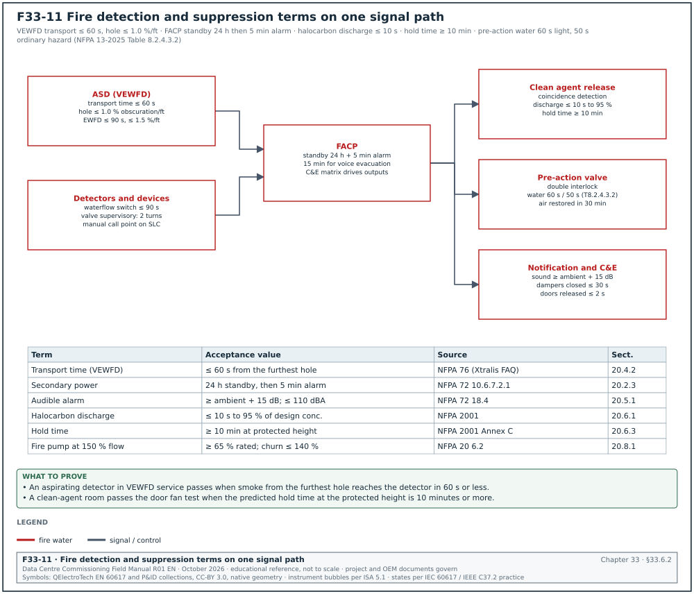
| Term | Full term | Definition | Section |
|---|---|---|---|
| TA, TMR | tasks anticipated, tasks made ready | Last Planner System measures of look-ahead planning. | 11.8 |
| TAB | testing, adjusting and balancing | Process that measures and sets air and water flows to the design values. | 19.5 |
| Tan δ | tan δ (dissipation factor, TD) | Ratio of resistive to capacitive current in insulation, measured at 0.5, 1.0 and 1.5 U0 in VLF tests. | 13.8.5 |
| TC 9.9 | ASHRAE Technical Committee 9.9 | ASHRAE committee that publishes the thermal guidelines for data processing environments. | 19.2 |
| TCDD, TCCF | Tier Certification of Design Documents, Tier Certification of Constructed Facility | Uptime Institute certifications of design and of the built facility. | 01.4 |
| TCS | technology cooling system | Coolant loop between the CDU and the IT cold plates; 45 °C supply on MSC-1. | 19.8 |
| TDD | total demand distortion | Harmonic current distortion relative to the maximum demand load current, limited by IEEE 519. | 17.10.1 |
| TEV | transient earth voltage | Voltage pulses on switchgear metalwork caused by internal PD, measured with TEV sensors. | 13.9.2 |
| TF | total float | Time an activity can slip without delaying completion. | 11.7.5 |
| THD | total harmonic distortion | RMS of harmonic components divided by the fundamental, in per cent; THDv for voltage. | 17.10.1 |
| Thermography | infrared thermography | Survey of connections under load with an infrared camera; results are judged by temperature difference bands. | 14.13 |
| TIA | Telecommunications Industry Association | Publisher of the ANSI/TIA-568 and TIA-606 cabling standards. | 26.0 |
| Tip-up | tip-up of tan δ | Difference of mean tan δ at 1.5 U0 and 0.5 U0; a high tip-up points to ionisation or moisture. | 13.8.5 |
| TLS | Transport Layer Security | Encryption protocol used by BACnet/SC and HTTPS. | 21.2 |
| TMS | time multiplier setting | Relay setting that scales an inverse-time curve. | 13.10.2 |
| TN, TT | earthing system types | TN systems connect exposed parts to the source neutral earth; TT systems use a separate local electrode. | 17.1 |
| TOC | Taking-Over Certificate | FIDIC certificate that records completion and starts the Defects Notification Period. | 12.1 |
| Token rotation | MS/TP token rotation time | Time for the token to pass through all masters on a trunk; below 1 s on MSC-1 sensor trunks. | 22.5.1 |
| Touch voltage | touch voltage | Voltage between an earthed metal part and the feet of a person standing nearby during a fault. | 17.5 |
| TQ | technical query | Question raised during engineering or manufacture, often with a proposed answer. | 05.11 |
| Transmittal | transmittal | Record that sends documents from one party to another with a list and a purpose. | 04.7 |
| Transport time | transport time of an aspirating detector | Time for smoke entering the furthest hole to reach the detector; 60 s maximum for VEWFD. | 20.4.2 |
| TRC | test reference cord | High-quality cord used to set the OLTS reference. | 26.8 |
| Trend | trend log | Stored series of time-stamped values of one point. | 21.12 |
| TRR | test readiness review | Meeting that checks entry criteria before a witnessed test. | 11.2 |
| TRXLPE | tree-retardant cross-linked polyethylene | Cable insulation with additives that slow water treeing; tested with the same VLF and tan δ limits as XLPE. | 13.8.5 |
| TTR | transformer turns ratio | Ratio test of each winding on each tap, within ±0.5 % of the nameplate. | 13.7.2 |
| Turnover package | turnover package | Set of records handed to the owner for each system at handover. | 12.3 |
| TVC | total viable count | Count of live bacteria in a water sample, in cfu/ml. | 18.4.5 |
| Type 10 | NFPA 110 Type 10 | EPSS type that must return power to the load terminals within 10 s. | 15.2.2 |
33.6.3Terms starting with U
| Term | Full term | Definition | Section |
|---|---|---|---|
| U0 | rated cable voltage to earth | Phase-to-earth voltage of a cable; tan δ and PD tests use multiples of U0. | 13.8 |
| UDP | User Datagram Protocol | Connectionless IP transport used by BACnet/IP on port 47808. | 21.2.2 |
| UFGS | Unified Facilities Guide Specifications | US federal guide specifications, for example UFGS 01 33 00 for submittals. | 06.4 |
| UHF | ultra-high frequency | Band from 300 MHz to 3 GHz used by partial-discharge sensors on switchgear and transformers. | 13.9.2 |
| uk | short-circuit impedance voltage of a transformer | Percentage voltage that drives rated current through the shorted winding; it sets the fault current. | 14.1.1 |
| UKAS | United Kingdom Accreditation Service | UK body that accredits laboratories. | 18.4.5 |
| Unit load | RS-485 unit load | Input loading of one transceiver; 32 unit loads per MS/TP segment. | 21.5.1 |
| UPC | ultra physical contact | Flat-polished connector end face. | 26.4 |
| UPS | uninterruptible power supply | System of rectifier, inverter, battery and bypass that supplies the critical load without a break. | 16.1 |
| UST | ungrounded specimen test | Insulation power factor test mode that measures current between two electrodes. | 13.7.5 |
| UTC | Coordinated Universal Time | Reference time scale; Jakarta is UTC+7. | 23.7 |
| UU | Undang-Undang | Indonesian law passed by parliament. | 10.7 |
33.6.4Terms starting with V
| Term | Full term | Definition | Section |
|---|---|---|---|
| VESDA | very early smoke detection apparatus | Brand of aspirating smoke detectors. | 20.4 |
| VEWFD | very early warning fire detection | NFPA 76 class with ≤ 1.0 % obscuration per foot hole sensitivity and 60 s transport time. | 20.4.2 |
| VFD | variable frequency drive | Drive that controls motor speed by frequency. | 18.7 |
| VFD (UPS class) | voltage and frequency dependent | UPS class (IEC 62040-3) whose output follows the input voltage and frequency; the passive-standby class. Second meaning beside variable frequency drive. | 16.0 |
| VFI | voltage and frequency independent | UPS class (IEC 62040-3) whose output is independent of input voltage and frequency; the double-conversion class. | 16.0 |
| VFI-SS-111 | IEC 62040-3 classification | Double-conversion UPS: output independent of input, sinusoidal output in normal and stored-energy modes, class 1 dynamic performance. | 16.2 |
| VI | voltage independent | UPS class (IEC 62040-3) whose output voltage is regulated while the frequency follows the input; the line-interactive class. | 16.0 |
| VLA | vented lead-acid | Flooded lead-acid battery tested to IEEE 450. | 16.7.1 |
| VLAN | virtual local area network | Logical network segment on shared switches. | 26.3 |
| VLF | very low frequency | 0.1 Hz AC test source for MV cable withstand and tan δ tests. | 13.8 |
| VMS | video management system | Server software that records and displays CCTV. | 27.7 |
| VO | variation order | Instruction that changes the work under the contract. | 08.2 |
| VRF | virtual routing and forwarding | Separate routing tables on one router. | 26.1 |
| VRLA | valve-regulated lead-acid | Sealed lead-acid battery tested to IEEE 1188. | 16.7.1 |
| VT | voltage transformer | Instrument transformer that gives a secondary voltage for meters and relays. | 13.6 |
33.6.5Terms starting with W
| Term | Full term | Definition | Section |
|---|---|---|---|
| Walk-in | rectifier walk-in | Gradual ramp of rectifier load after input returns, 15 s on the MSC-1 UPS. | 16.6.4 |
| Waterflow switch | waterflow switch | Paddle switch that alarms when water flows in a sprinkler pipe. | 20.3.2 |
| WBS | work breakdown structure | Hierarchy of deliverables and work packages for the schedule. | 11.7 |
| W-classes | ASHRAE liquid cooling classes | Classes W17 to W+ named by the maximum facility water supply temperature in °C. | 19.2.2 |
| WECO | Western Electric Company rules | Rules for signalling an out-of-control process on a control chart. | 30.9.4 |
| Wenner method | Wenner four-pin method | Soil resistivity method with four equally spaced pins; ρ = 2πaR. | 17.2.2 |
| WIP | work in progress | ISO 19650 state for information still under development. | 04.2 |
| WIR | work inspection request | Another name for the inspection request. | 07.5 |
| Witness point | witness point | ITP point that the named party is notified of and may attend; work continues if they do not attend after notice. | 07.2 |
33.6.6Terms starting with X
| Term | Full term | Definition | Section |
|---|---|---|---|
| XLPE | cross-linked polyethylene | Insulation of MV cables. | 13.8 |
33.6.7Terms starting with Z
| Term | Full term | Definition | Section |
|---|---|---|---|
| ZCR | zone and conduit requirements | IEC 62443-3-2 requirements for partitioning a system into zones and conduits. | 27.10 |
| Zone (end face) | IEC 61300-3-35 inspection zones | Zones A core, B cladding, C adhesive and D contact of a connector end face; only A and B are graded in the 2022 edition. | 26.7.2 |
| Zs | earth fault loop impedance | Impedance of the fault loop that sets the earth fault current and the disconnection time. | 17.5.3 |
| ZSI | zone-selective interlocking | Breaker communication that lets the breaker nearest the fault trip without delay while upstream breakers wait. | 14.6.1 |
33.6.8Device numbers, classes and codes that start with a digit
Figure F33-12 shows the ANSI/IEEE C37.2 device numbers 25, 32, 50/51, 51N, 52G and 87T on the MSC-1 generator and feeder single-line diagram with the example settings.

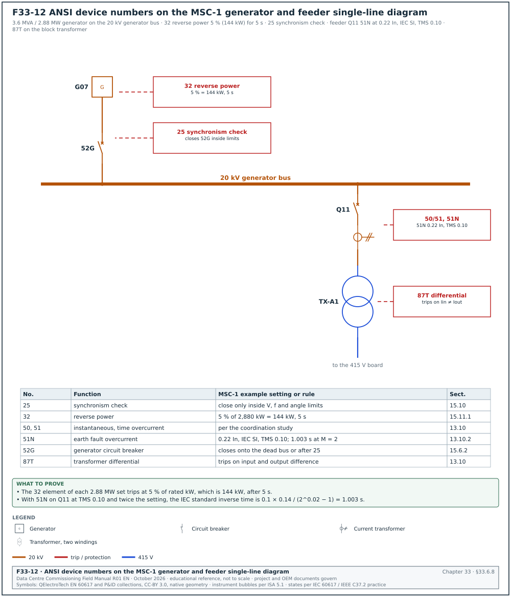
| Term | Full term | Definition | Section |
|---|---|---|---|
| 0.2S, 0.5S | meter accuracy classes | IEC 62053-22 energy meter classes with accuracy also stated at low current. | 16.9.4 |
| 25 | synchronism-check relay (ANSI 25) | Relay that permits closing only when voltage, frequency and angle are inside limits. | 15.10 |
| 32 | reverse power relay (ANSI 32) | See reverse power. | 15.11 |
| 50, 51, 51N | instantaneous and time overcurrent, earth fault overcurrent (ANSI) | Relay elements; 51N on feeder Q11 is set at 0.22 In, IEC standard inverse, TMS 0.10. | 13.10 |
| 52G | generator circuit breaker (ANSI 52G) | Breaker that connects a generator to the generator bus. | 15.6.2 |
| 5P20 | protection CT class 5P20 | Protection CT with 5 % composite error at 20 times rated current. | 13.6.2 |
| 87T | transformer differential relay (ANSI 87T) | Relay that trips on a difference between transformer input and output currents. | 13.10 |
33.7Quick reference: MV tests
Figure F33-1 prints the most used electrical values of sections 33.7 to 33.11 on one sheet. The values below are the acceptance values of chapter 13 for the 20 kV switchgear, transformers and cables of MSC-1. The MV insulation resistance minimums depend on the voltage class. The 20 kV system belongs to the 25 kV class in NETA ATS Table 100.1.

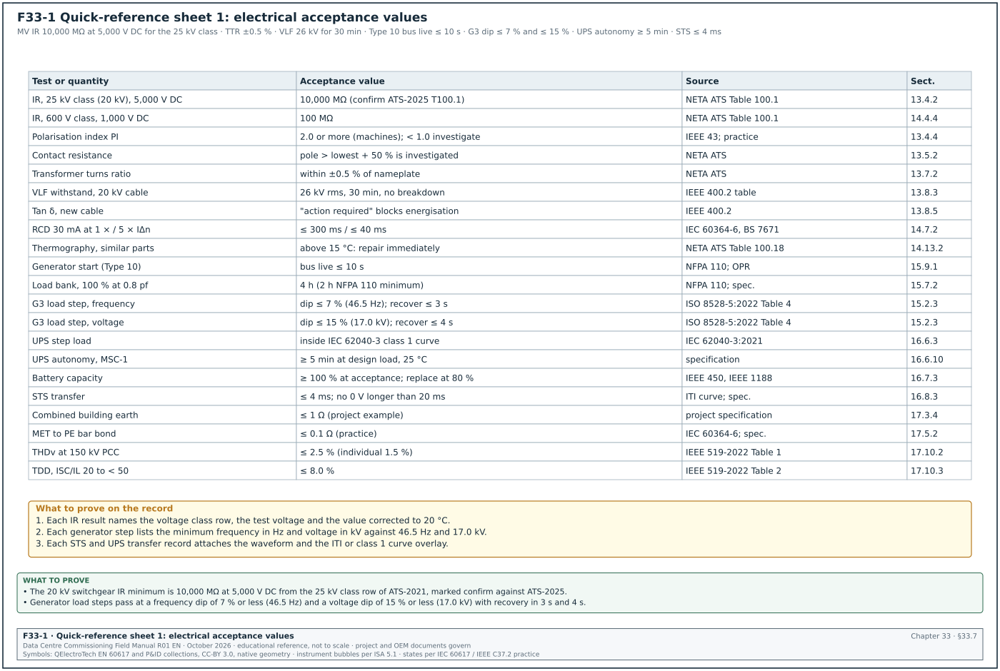
33.7.1Insulation resistance, PI and DAR
| Test or quantity | Acceptance value | Source document | Section |
|---|---|---|---|
| IR, 1,000 V class equipment, 1,000 V DC | 100 MΩ | NETA ATS Table 100.1, 600 V and 1,000 V rows (verified, RF-33 6.1) | 13.4.2 |
| IR, 5 kV class, 2,500 V DC | 1,500 MΩ | NETA ATS-2021 Table 100.1 (confirm against ANSI/NETA ATS-2025 Table 100.1) | 13.4.2 |
| IR, 15 kV class, 2,500 V DC | 5,000 MΩ | NETA ATS Table 100.1 | 13.4.2 |
| IR, 25 kV class (20 kV system), 5,000 V DC | 10,000 MΩ | NETA ATS-2021 Table 100.1 (confirm against ANSI/NETA ATS-2025 Table 100.1; RF-33 6.1a) | 13.4.2 |
| IR, 34.5 kV class, 5,000 V DC | 100,000 MΩ | NETA ATS-2021 Table 100.1 (confirm against ANSI/NETA ATS-2025 Table 100.1) | 13.4.2 |
| Transformer winding IR, 0 to 600 V, 1,000 V DC (liquid-filled / dry-type) | 100 MΩ / 500 MΩ | NETA ATS Table 100.5 (confirm the 0 to 600 V row against ANSI/NETA ATS-2025 Table 100.5) | 13.4.2 |
| Transformer winding IR, 601 to 5,000 V, 2,500 V DC (liquid-filled / dry-type) | 1,000 MΩ / 5,000 MΩ | NETA ATS Table 100.5 | 13.4.2 |
| Transformer winding IR, above 5,000 V, 5,000 V DC (liquid-filled / dry-type) | 5,000 MΩ / 25,000 MΩ | NETA ATS Table 100.5 | 13.4.2 |
| Polarisation index (PI) | below 1.0 investigate; 2.0 or more for class B and higher machine insulation; transformers compared with factory value | IEEE 43; practice | 13.4.4 |
| Dielectric absorption ratio (DAR) | 1.25 or more (practice, not a standard limit) | practice | 13.4.4 |
| Generator stator IR at 40 °C | ≥ 100 MΩ for a form-wound stator built after about 1970; (kV + 1) = 21 MΩ applies to older windings; PI ≥ 2.0 | IEEE 43-2013 minimum values as quoted in a secondary guide (verified, RF-15 row 24) | 15.4.2 |
| MV cable IR after withstand | for example 1 MΩ·km at 1,000 V DC (project value) | project specification | 13.8.2 |
33.7.2Switchgear and breakers
| Test or quantity | Acceptance value | Source document | Section |
|---|---|---|---|
| Contact resistance | not above the manufacturer's maximum; investigate any pole that deviates by more than 50 % of the lowest value | NETA ATS (RF-13 row 5) | 13.5.2 |
| Vacuum breaker timing | OEM routine values; typical opening 30 to 60 ms, closing 40 to 80 ms; pole spread to the OEM limit | OEM routine test report | 13.5.3 |
| Power-frequency withstand of a section | no breakdown, no flashover; IR after the test compared with the IR before the test, and a fall is investigated | OEM and project specification | 13.5.7 |
| SF6 gas density | in the green zone or above the OEM minimum filling density at 20 °C | OEM manual | 13.5.5 |
| SF6 gas quality | OEM values (for example moisture limits by dew point) | OEM manual (confirm the values against IEC 60480:2019 Table 1, SF6 contaminants) | 13.5.5 |
33.7.3Instrument transformers
| Test or quantity | Acceptance value | Source document | Section |
|---|---|---|---|
| CT ratio error | within class limit (5P: ±1 % at rated current; 0.5: ±0.5 % at 100 % rated current) | IEC 61869-2:2012; 5P value verified (RF-33 6.5); class 0.5 (confirm the value against IEC 61869-2:2012 Table 201, measuring classes 0.1 to 1) | 13.6.2 |
| CT polarity | S1 in phase with P1 (subtractive) | IEC 61869-2 marking | 13.6.2 |
| CT knee point | above the value in the protection study; curve matches the OEM curve | IEC 61869-2 | 13.6.2 |
| CT secondary insulation | 1 MΩ or more is a common minimum | practice (confirm against ANSI/NETA ATS-2025 section 7.10) | 13.6.2 |
| VT ratio, class 0.5 | ±0.5 % at 80 % to 120 % rated voltage | IEC 61869-3 class 0.5 (verified, RF-33 6.5) | 13.6.3 |
| VT primary insulation | OEM minimum; practice 1,000 MΩ or more | practice | 13.6.3 |
33.7.4Power transformers and oil
| Test or quantity | Acceptance value | Source document | Section |
|---|---|---|---|
| Turns ratio (TTR) | within ±0.5 % of the nameplate ratio on every tap | NETA ATS (RF-13 row 6); IEC 60076-1 (confirm against the voltage ratio item of IEC 60076-1:2011 clause 10, Table 1, Tolerances) | 13.7.2 |
| Winding resistance, liquid-filled | within 2 % of the factory value and of the adjacent phases after temperature correction (1 % is the dry-type item) | NETA ATS 7.2.2 wording (RF-13 row 29; confirm against ANSI/NETA ATS-2025 section 7.2.2) | 13.7.3 |
| Insulation power factor, new oil-paper | 0.5 % or less at 20 °C (practice) | confirm against ATS-2025 Table 100.3 and IEEE C57.152-2025 | 13.7.5 |
| SFRA | comparison with factory trace; mid-frequency differences referred to the OEM | IEC 60076-18 (no single pass/fail number) | 13.7.6 |
| Oil BDV, ASTM D1816, equipment ≤ 69 kV | ≥ 25 kV (1 mm) or ≥ 45 kV (2 mm) | IEEE C57.106 (confirm against IEEE C57.106-2015 Table 2) | 13.7.7 |
| Oil BDV, IEC 60156, Um < 72.5 kV | > 55 kV (utility guide values) | IEC 60422 (confirm against IEC 60422:2024 Table 3, limits after filling in new equipment) | 13.7.7 |
| Oil water content at 20 °C | ≤ 10 mg/kg for Um < 72.5 kV (20 kV class); < 5 mg/kg for Um > 145 kV (TX-A) | IEC 60422 values as quoted in RF-13 row 30 (confirm against IEC 60422:2024 Table 3) | 13.7.7 |
| DGA | baseline; any acetylene is investigated | IEEE C57.104-2019; IEC 60599 | 13.7.7 |
| Oil and winding temperature indicators | within ±2 °C (practice; OEM value) | OEM | 13.7.9 |
33.7.5MV cables: VLF, tan δ and PD
| Test or quantity | Acceptance value | Source document | Section |
|---|---|---|---|
| VLF withstand, 20 kV cable, acceptance | 26 kV, 30 min, no breakdown | IEEE 400.2 table as reproduced by class (RF-13 row 14; confirm the row for the contract cable in IEEE 400.2-2024) | 13.8.3 |
| VLF withstand, 22 kV cable (2024 rating list), acceptance | 28 kV, 30 min | IEEE 400.2 table | 13.8.3 |
| VLF withstand, 15 kV / 25 kV / 35 kV cable, acceptance | 21 / 32 / 44 kV, 30 min | IEEE 400.2 table | 13.8.3 |
| Tan δ, no action required | stability < 0.1, tip-up < 5, mean TD at U0 < 4 (× 10⁻³) | IEEE 400.2 (2013 table for service-aged PE insulation) | 13.8.5 |
| Tan δ, further study advised | stability 0.1 to 0.5, tip-up 5 to 80, mean 4 to 50 | IEEE 400.2 | 13.8.5 |
| Tan δ, action required | stability > 0.5, tip-up > 80, mean > 50; blocks energisation of a new cable | IEEE 400.2 | 13.8.5 |
| Offline PD, new cable system | no PD above background up to 1.5 U0 at a calibrated sensitivity of 20 pC or better (example project value) | project specification and the accessory supplier's test guide | 13.9.4 |
33.7.6Protection and energisation
| Test or quantity | Acceptance value | Source document | Section |
|---|---|---|---|
| Relay secondary injection | pick-up ±3 % to ±5 %, timing ±5 % or ±30 ms (typical; the relay manual gives the project values) | relay manual | 13.10.2 |
| Relay setting file | file read from the relay equals the approved revision | protection study | 13.10.2 |
| Primary injection metering | within CT class plus relay metering accuracy (for example ±3 %) | relay manual | 13.10.3 |
| Phasing across an open point | like phases near zero; cross pairs about line voltage (20 kV); same rotation both sides | practice | 13.11.2 |
| MV first-pass yield of L3 tests | ≥ 90 % (MSC-1 target) | case ledger | 13.14 |
| Test to signed record | ≤ 2 working days | MSC-1 KPI | 13.14 |
33.7.7Checks on MV values before the witness test
- Match the class row. The testing contractor's report names the NETA voltage class and the test voltage for each IR result. A 20 kV switchboard tested at 2,500 V DC against the 15 kV row is retested at 5,000 V DC against 10,000 MΩ.
- Correct to 20 °C. Every IR result on a transformer carries the winding temperature and the corrected value; an uncorrected value is returned before the hold point is released.
- Compare poles. Contact resistance and timing are judged pole against pole and against the OEM maximum; the 50 % rule finds a high pole that is still below the OEM value.
- Read the tan δ category. A new cable in "action required", or with a tip-up above the limit, blocks energisation of that cable until it is repaired and retested.
- Read back the relay file. The setting file read from each relay after injection is compared with the approved revision; a difference is an issue before energisation.
33.8Quick reference: LV tests
| Test or quantity | Acceptance value | Source document | Section |
|---|---|---|---|
| Switchboard, busway and cable IR, 600 V class | 100 MΩ at 1,000 V DC (in the absence of OEM data) | NETA ATS Table 100.1 | 14.4.4 |
| Bolted joint torque sample | no sampled joint turns before the OEM value; one failure turns the sample into a 100 % check | project rule; confirm in the commissioning specification | 14.4.3 |
| Busway IR | at least 1 MΩ to the OEM guide; project usually adopts 100 MΩ at 1,000 V DC | OEM guide; NETA Table 100.1 (RF-14 row 7) | 14.5.3 |
| Busway joint resistance | inside the 50 % rule; outside the rule blocks energisation of the run | NETA ATS practice | 14.2.2 |
| Canalis KR joint torque | 54 N·m (17 mm bolt), 84 N·m (19 mm bolt) | Canalis KR installation guide (RF-14 row 5) | 14.5.2 |
| ACB and MCCB trip units | within trip unit manual tolerance bands; current sensors need primary injection | trip unit manual | 14.6.4 |
| Trip unit metering | for example ±2 % (the metering accuracy table of the trip unit user guide gives the project value) | trip unit manual | 14.6.5 |
| RCD at 1 × IΔn, general | trip within 300 ms | IEC 60364-6 and BS 7671 guidance (RF-14 row 9) | 14.7.2 |
| RCD at 1 × IΔn, S-type | trip between 130 and 500 ms | IEC 60364-6 and BS 7671 guidance | 14.7.2 |
| RCD at 5 × IΔn (30 mA device) | trip within 40 ms | IEC 60364-6 and BS 7671 guidance | 14.7.2 |
| Interlocks and transfer schemes | every transition as the sequence, times within the stated tolerance (for example ±10 %); blocked actions stay blocked | sequence description | 14.8.2 |
| Arc-flash working distance | LV switchgear 610 mm (24 in), LV MCCs and panelboards 457 mm (18 in), 5 kV and 15 kV switchgear 914 mm (36 in) | IEEE 1584-2018 typical working distances (verified, RF-33 6.3) | 14.12.2 |
| Thermography, similar components | 1 to 3 °C possible deficiency; 4 to 15 °C probable; above 15 °C major discrepancy, repair immediately | ANSI/NETA ATS Table 100.18 as commonly quoted (confirm against Table 100.18 of the NETA ATS edition named in the contract) | 14.13.2 |
| Thermography, above ambient | 1 to 10 °C, 11 to 20 °C, 21 to 40 °C, above 40 °C | ANSI/NETA ATS Table 100.18 as commonly quoted (confirm against Table 100.18 of the NETA ATS edition named in the contract) | 14.13.2 |
| LV first-pass yield | ≥ 90 % (MSC-1 target) | case ledger | 14.15 |
33.8.1Checks on LV values before the witness test
- State the torque sample size. The record names the sample (for example 20 joints) and the rule that one failure turns the sample into a 100 % check of the board.
- Primary-inject the 4-pole ACBs. Secondary injection proves the trip unit only; primary injection proves the sensors and the neutral sensor polarity on every ACB with a G element.
- Load before thermography. A survey below 40 % of normal circuit loading is rescheduled with load banks; the record states the load in amperes and in per cent of normal circuit loading (NFPA 70B-2023 7.4.5 and 7.4.6, the edition the source quotes; the NFPA 70B-2026 clause numbers were not read; section 14.13.1).
- Set the RCD type. The installation tester is set to the RCD type (AC, A, F or B) and the record gives the times at 0° and 180°.
33.9Quick reference: generators
| Test or quantity | Acceptance value | Source document | Section |
|---|---|---|---|
| NFPA 110 Type | Type 10: power to the load terminals within 10 s | NFPA 110 | 15.2.2 |
| MSC-1 start time | generator bus live within 10 s; all 16 required sets on the bus within 30 s (example project values; the OPR states the project values) | OPR | 15.9.1 |
| Load bank run | 100 % (2,880 kW, 0.8 pf) for 4 h (2 h minimum per NFPA 110 acceptance) | NFPA 110; specification | 15.7.2 |
| G3 frequency dip on load acceptance | ≤ 7 % (46.5 Hz at 50 Hz) | ISO 8528-5:2022 Table 4 (Kohler, RF-33 6.2) | 15.2.3 |
| G3 frequency rise on 100 % load rejection | ≤ 10 % (55.0 Hz) | ISO 8528-5:2022 Table 4 (Kohler, RF-33 6.2) | 15.2.3 |
| G3 frequency recovery | ≤ 3 s into ±2 % (49.0 to 51.0 Hz) | ISO 8528-5:2022 Table 4 (Kohler, RF-33 6.2) | 15.2.3 |
| G3 voltage dip / rise | ≤ 15 % (17.0 kV) / ≤ 20 % (24.0 kV) | ISO 8528-5:2022 Table 4 (Kohler, RF-33 6.2) | 15.2.3 |
| G3 voltage recovery | ≤ 4 s | ISO 8528-5:2022 Table 4 (Kohler, RF-33 6.2) | 15.2.3 |
| Transient test acceptance | G3 values of ISO 8528-5:2022 Table 4; the project specification may set tighter values | ISO 8528-5:2022 Table 4 | 15.8.4 |
| Steady-state frequency band and droop, G3 | ≤ ±0.5 %; droop ≤ 3 % | ISO 8528-5:2022 Table 4 (Kohler, RF-33 6.2) | 15.2.3 |
| Crank cycle | crank and rest periods within ±1 s; overcrank alarm; engine starts on the same battery after the test | OEM controller | 15.9.2 |
| Active load sharing | ±5 % between 80 % and 100 % load; ±10 % between 20 % and 80 %; reactive ±10 % | ISO 8528-5:2022 Table 4 as quoted in the Kohler white paper (verified, RF-15 row 10) | 15.10.5 |
| Closed-transition overlap | ≤ the agreed value; overlap timer trips the correct breaker | specification | 15.10.6 |
| Overspeed shutdown | 115 % of rated speed (1,725 rpm at 1,500 rpm) (example; OEM value governs) | OEM | 15.6.2 |
| Reverse power (32) | 5 % of rated kW (144 kW), 5 s | protection study | 15.11.1 |
| Fuel water and sediment | ≤ 0.05 % by volume | ASTM D975 Table 1, No. 1-D and No. 2-D grades, by ASTM D2709 (verified, RF-33 6.6) | 15.5.5 |
| Fuel cleanliness at the engine | ≤ ISO 18/16/13 | OEM fuel recommendation | 15.5.5 |
| Fuel water content | ≤ 200 mg/kg (common project value) | project specification | 15.5.5 |
| Fuel pipework pressure test | no visible leak and no unexplained pressure drop | project specification | 15.5.3 |
| Winding resistance | phases within 2 % of each other and of the factory value | ANSI/NETA ATS | 15.4.2 |
| KPI: transient margin | smallest margin to the G3 limit ≥ 1 percentage point | MSC-1 KPI | 15.17 |
33.9.1Checks on generator values before the witness test
- Calculate the limits at site values. Write the G3 limits in hertz and kilovolts for the set (46.5 Hz, 55.0 Hz, 17.0 kV, 24.0 kV on MSC-1) on the test sheet before the first step.
- Synchronise the recorders. The PQ analyser, the load bank metering and the controller log use the same time source so that the start-time record can be built event by event.
- Check the fuel before the run. The fuel quality certificate (water and sediment ≤ 0.05 %, cleanliness ≤ ISO 18/16/13 at the engine) is on file before the 4-hour load bank run.
- Prove the shutdowns on the set. Overspeed, low oil pressure, high coolant temperature and emergency stop are tested on each set and the trip value is recorded, because a failed shutdown is a safety issue.
33.10Quick reference: UPS and batteries
Figure F33-13 plots the ITI (CBEMA) voltage tolerance envelope of section 33.11 with the STS transfer of this section and the two EPMS waveform trigger tests of section 33.16.

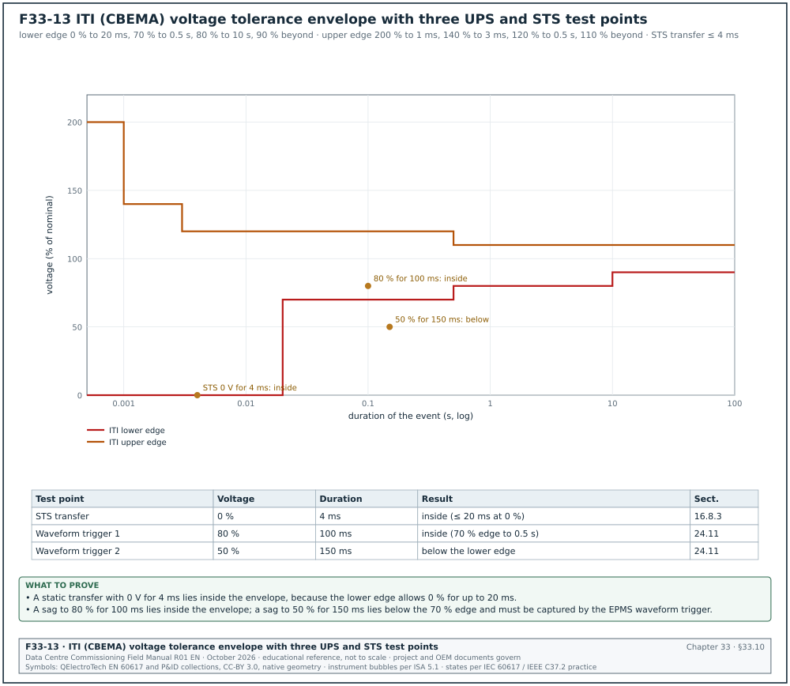
| Test or quantity | Acceptance value | Source document | Section |
|---|---|---|---|
| Step load, linear 100 % | inside the class 1 curve; data sheets commonly ±5 % and recovery about 20 to 50 ms (the data-sheet values are the project values; curve: IEC 62040-3:2021 Figure 2, class 1, in 5.3.4) | IEC 62040-3:2021 | 16.6.3 |
| Input failure and return | no disturbance outside class 1; walk-in as set; recharge current limited | IEC 62040-3 | 16.6.4 |
| Maintenance bypass | no interruption (no RMS below 90 % for more than one half cycle); MOP validated | MOP | 16.6.6 |
| Generator compatibility | input current THD at full load ≤ 5 % (example project value); generator bus THD ≤ 5 %; synchronised within 60 s of bus live | project value; IEEE 519 | 16.6.8 |
| Efficiency | not lower than the guarantee minus the agreed measurement tolerance | contract | 16.6.9 |
| Autonomy | ≥ design value at design load (5 minutes on MSC-1), corrected to 25 °C | specification | 16.6.10 |
| Battery capacity at acceptance | ≥ 100 % of rated (or the guaranteed value) | IEEE 450, IEEE 1188 | 16.7.3 |
| Battery replacement criterion | capacity falls to 80 % of rated | IEEE 450, IEEE 1188 | 16.7.3 |
| STS transfer | ≤ 4 ms (example); no zero voltage longer than 20 ms; no voltage below 70 % longer than 0.5 s (ITI curve; confirm against the ITI note) | ITI curve; specification | 16.8.3 |
| ATS closed transition | overlap ≤ 100 ms typical | practice | 16.8.1 |
| Bypass synchronisation window | ±2 % (49.0 to 51.0 Hz) | OEM setting | 16.5 |
| Meter accuracy check | error within class limit plus the reference uncertainty | IEC 62053-22 | 16.9.5 |
| Loss of one block at L5 | each of the 7 remaining UPS blocks carries ≤ 71.4 % of rating (1.786 MW) plus the measured margin; no rack power loss | case ledger | 16.11 |
| KPI: first-pass yield of UPS L4 tests | ≥ 90 % | MSC-1 KPI | 16.14 |
33.10.1Checks on UPS and battery values before the witness test
- Use two calibrated analysers. The efficiency result is only valid with input and output analysers of IEC 61000-4-30 Class A and the combined uncertainty stated, for example ±0.14 % at 62.5 % load.
- Correct autonomy to 25 °C. The autonomy record states the battery temperature and the correction used before it is compared with the 5-minute design value.
- Float before the capacity test. The battery is on float for the period the procedure states (96 h in the MSC-1 record) before the discharge starts.
- Record the class 1 curve. The step load and mode transfer records attach the waveform at 10 kHz or faster and overlay the IEC 62040-3 class 1 curve.
33.11Quick reference: earthing and power quality
| Test or quantity | Acceptance value | Source document | Section |
|---|---|---|---|
| Substation grid resistance | value from the IEEE 80 study for safe touch and step voltages (MSC-1 study ≤ 0.5 Ω) | project earthing study | 17.3.4 |
| Combined building earthing | ≤ 1 Ω (common project requirement) | project specification (example) | 17.3.4 |
| LPS earth termination | ≤ 10 Ω at low frequency (recommended value) | IEC 62305-3 clause 5.4 as quoted in the ABB Furse guide (verified, RF-33 6.4 and RF-17 row 29) | 17.3.4 |
| TT or TN building electrode | from PUIL 2020 and the protective device calculation | PUIL 2020 (SNI 0225:2020) (confirm the earth electrode clause of PUIL 2020) | 17.3.4 |
| Fall-of-potential plateau | 52 %, 61.8 % and 72 % readings agree (MSC-1 example within ±4.8 %) | IEEE 81-2012 Annex C, the edition the source quotes; IEEE 81-2025 not read | 17.3 |
| MET to PE bar continuity | ≤ 0.1 Ω (practice) | project specification; IEC 60364-6 | 17.5.2 |
| Data-hall supplementary bonds | ≤ 0.1 Ω (project value; confirm against the project specification and ANSI/TIA-607-D) | project specification | 17.5.2 |
| LPS down conductor continuity | overall ≤ 0.2 Ω commonly quoted (confirm against the steel-reinforcement continuity requirement of IEC 62305-3:2024 and its Annex D; the 2024 edition has no Annex E) | IEC 62305-3 | 17.5.2 |
| Down conductor spacing | 10 m class I and II, 15 m class III, 20 m class IV | IEC 62305-3 Table 4 as reproduced in the Furse guide Table 11 (verified, RF-33 6.4) | 17.6.3 |
| Voltage THD, bus ≤ 1.0 kV | individual 5.0 %, THD 8.0 % | IEEE 519-2022 Table 1 | 17.10.2 |
| Voltage THD, 1 kV < V ≤ 69 kV | individual 3.0 %, THD 5.0 % | IEEE 519-2022 Table 1 | 17.10.2 |
| Voltage THD, 69 kV < V ≤ 161 kV (150 kV PCC) | individual 1.5 %, THD 2.5 % | IEEE 519-2022 Table 1 | 17.10.2 |
| Current TDD, ISC/IL 20 to < 50 | TDD 8.0 %; h < 11: 7.0 % | IEEE 519-2022 Table 2 | 17.10.3 |
| IEEE 519 statistics | weekly 95th percentile of 10-minute values ≤ the limit; daily 99th percentile of 3 s values ≤ 1.5 × (voltage) and ≤ 2.0 × (current); weekly 99th percentile of 10-minute current values ≤ 1.5 × | IEEE 519-2022 (RF-17 row 24) | 17.10.4 |
| ITI lower edge | 0 % to 20 ms, 70 % to 0.5 s, 80 % to 10 s, 90 % beyond | ITI (CBEMA) curve | 17.11.2 |
| ITI upper edge | 200 % to 1 ms, 140 % to 3 ms, 120 % to 0.5 s, 110 % beyond | ITI (CBEMA) curve | 17.11.2 |
| Dip / swell / interruption thresholds | 90 % / 110 % / 10 % of Udin as instrument settings; EN 50160 reports use 5 % for an interruption | IEC 61000-4-30 practice (confirm against IEC 61000-4-30:2025 5.5 and 5.6); EN 50160 note per RF-17 row 23 | 17.11.1 |
| Flicker Plt at the supply | ≤ 1 for 95 % of the week | EN 50160 (verified, RF-33 6.7; check the edition adopted by the project) | 17.12.1 |
| Flicker planning levels at MV | Pst 0.9, Plt 0.7 | IEC/TR 61000-3-7 (confirm against IEC/TR 61000-3-7:2008 Table 2, indicative values of planning levels for flicker in MV, HV and EHV power systems) | 17.12.1 |
| Voltage unbalance | 2 % for 95 % of 10-minute values in a week (confirm against the supply voltage unbalance clause of EN 50160) | EN 50160 | 17.12.2 |
| Frequency | 50 Hz ±1 % (49.5 to 50.5 Hz) for 99.5 % of a year; grid code governs | EN 50160 (verified, RF-33 6.7) | 17.12.3 |
33.11.1Checks on earthing and PQ values before the witness test
- Prove the plateau. A fall-of-potential result is accepted only with the 52 %, 61.8 % and 72 % readings and a second line at 90°.
- Use the PCC row. The IEEE 519 row is chosen from the PCC voltage and the measured ISC/IL ratio; on MSC-1 the PCC is at 150 kV and ISC/IL is 44.3.
- Survey for a full week. The 95th percentile statistics need 7 days of 10-minute values at representative load.
- Explain every event. Each dip, swell and interruption outside the ITI envelope has a cause and an effect in the event table.
33.12Quick reference: CHW plant and flushing
Figure F33-2 prints the most used mechanical and fire values of sections 33.12 to 33.14 on one sheet.

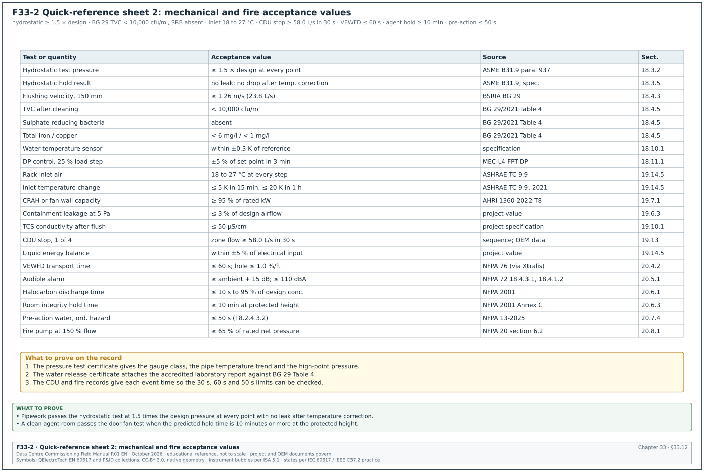
| Test or quantity | Acceptance value | Source document | Section |
|---|---|---|---|
| Hydrostatic test pressure | not less than 1.5 times the design pressure at every point; 10 minutes code minimum, project hold 2 to 24 hours | ASME B31.9 (confirm para. 937.3 in ASME B31.9-2025) | 18.3.2 |
| Hydrostatic test result | no visible leakage; pressure at or above test pressure after temperature correction; high point ≥ 1.5 × design | ASME B31.9; specification | 18.3.5 |
| Test gauge | class 0.5 or better; test pressure between 1/3 and 2/3 of full scale; calibrated within 12 months | method statement | 18.3.3 |
| Flushing velocity | BG 29 minimum by size, for example 1.03 m/s (25 mm), 1.21 m/s (100 mm), 1.26 m/s (150 mm) | BSRIA BG 29 | 18.4.3 |
| TVC after cleaning | less than 10,000 cfu/ml | Normec guide citing BG 29/2021 Table 4 | 18.4.5 |
| Pseudomonads | less than 1,000 cfu/ml | BG 29/2021 Table 4 | 18.4.5 |
| SRB | absent | BG 29/2021 Table 4 | 18.4.5 |
| Suspended solids | less than 30 mg/l at the main pump; less than 45 mg/l at the extremities | BG 29/2021 Table 4 | 18.4.5 |
| Total iron / dissolved iron / total copper | less than 6 / 3 / 1 mg/l | BG 29/2021 Table 4 | 18.4.5 |
| Fill water TVC, pH, chloride | less than 1,000 cfu/ml; 6.0 to 8.5; less than 250 mg/l (example) | project specification | 18.5.2 |
| Pump field performance | within project tolerance of the factory curve, for example ±5 % (project value) | project method statement | 18.7.3 |
| Pump factory test | measured curve passes through the tolerance cross of the ISO 9906:2012 acceptance grade at the guarantee point | ISO 9906:2012 | 18.7.3 |
| Pump vibration | within the zone the specification names; group 2 rigid base A/B, B/C, C/D 1.4, 2.8, 4.5 mm/s r.m.s. (vendor summary; confirm against the zone boundary table of ISO 20816-3:2022) | ISO 10816-3 or ISO 20816 | 18.7.3 |
| Chiller factory test | AHRI 550/590 tolerances; energy balance within Tol4; voltage unbalance within 2.0 % | AHRI 550/590 | 18.8.3 |
| Dry cooler capacity | at least 95 % of selection at measured air-on temperature (project value) | project specification | 18.9.1 |
| Water temperature sensor | within ±0.3 K of reference; ΔT pair within ±0.1 K | project specification; EN 1434-1 heat-meter pair limit ±(0.5 + 3 × ΔΘmin ÷ ΔΘ) % (Kamstrup summary, edition not stated; confirm against EN 1434-1:2022, which superseded EN 1434-1:2015+A1:2018; the 2022 text was not read) | 18.10.1 |
| DP and static pressure transmitters | within ±1 % of span | specification | 18.10.1 |
| Flow meter | within ±2 % of reading against clamp-on reference | specification | 18.10.1 |
| DP control after a 25 % load step | within ±5 % of set point, settled in 3 minutes | MEC-L4-FPT-DP | 18.11.1 |
| Plant leak alarm | within 10 s with location | MEC-L4-FPT-LD | 18.11.1 |
| Chiller staging timers (MSC-1) | stage up after 10 min above 90 % or 5 min above set point + 0.5 K; minimum run 15 min; minimum off 10 min | sequence of operation | 18.8.6 |
33.12.1Checks on plant values before the witness test
- Correct for temperature. A pressure drop during a hydrostatic hold is compared with the pipe temperature trend before it is called a leak.
- Test at the high point. The test pressure is at least 1.5 times the design pressure at the high point; the low point pressure is checked against the component rating.
- Record the flushing velocity. The flushing record gives the measured flow and the velocity for each pipe size against the BG 29 minimum.
- Send samples to an accredited laboratory. The release certificate needs the laboratory report with TVC, SRB, suspended solids and iron against BG 29 Table 4.
33.13Quick reference: air and liquid cooling
| Test or quantity | Acceptance value | Source document | Section |
|---|---|---|---|
| Rack inlet air, every sensor | 18 to 27 °C at every step | ASHRAE TC 9.9 recommended range | 19.14.5 |
| Inlet temperature change during failure tests | ≤ 5 K in any 15 minutes, ≤ 20 K in any 1 hour | ASHRAE TC 9.9, 5th edition (2021), reference card footnote (verified, RF-33 6.13) | 19.14.5 |
| Hall dew point | −9 to 15 °C | ASHRAE TC 9.9 | 19.14.5 |
| CRAH or fan wall capacity | ≥ 95 % of rated kW; air and water sides agree within 10 % | project specification; AHRI 1360-2022 section 6.10 Table 8 (≥ 95 % of rated net sensible capacity) | 19.7.1 |
| Supply air control | settles within ±0.5 K in 10 minutes after a 2 K step | controls sequence | 19.7.1 |
| Fan failure, 1 fan of the 12 in one fan wall | airflow held within −5 % in 60 s | OEM data and sequence | 19.7.1 |
| Fan airflow tolerance | 0 to +10 % of design airflow | specification (confirm against the tolerance tables of the NEBB Procedural Standards and the AABC National Standards) | 19.5.2 |
| Terminals and tiles | ±10 %, tightened to ±5 % in critical spaces | project specification | 19.5.2 |
| Pitot traverse versus controller Δp | within ±5 % | project tolerance | 19.4.3 |
| Containment leakage | at 5 Pa ≤ 3 % of aisle design airflow (project value; no published standard value was found) | project specification | 19.6.3 |
| Containment pressure control | set point ±1 Pa | containment pressure control sequence (19.6.4) | 19.14.5 |
| TCS hydrostatic proof test | 1.5 × 6 = 9.0 bar g, 2 hours hold (project value; ASME B31.9 and B31.3 set a 10-minute minimum, section 18.3.2) | project specification | 19.9.1 |
| TCS conductivity after flushing | ≤ 50 µS/cm | project specification | 19.10.1 |
| TCS pH and bacteria | pH ≥ 6; total aerobic bacteria ≤ 1,000 CFU/ml | project specification | 19.10.1 |
| CDU flow meter | within ±3 % of clamp-on reference | OEM and specification | 19.11.3 |
| CDU pump changeover | standby running within 10 s (OEM value from the CDU OEM manual) | OEM | 19.11.3 |
| CDU stop, 1 of 4 | zone flow ≥ 58.0 L/s in 30 s; TCS supply rise ≤ 2 K, back within ±0.5 K in 3 min | controls sequence and CDU OEM failover data sheet (project values) | 19.13 |
| Rack flow balance | every rack inside ±10 % of design flow | specification | 19.12.2 |
| Heat-load step stability | every logger channel within 0.5 K over 15 minutes; load within ±2 % (project value from the project Cx specification) | project Cx specification | 19.14.4 |
| Liquid energy balance | heat removed within ±5 % of electrical input (project value) | project specification | 19.14.5 |
| TCS supply at farthest rack | 45 ±1 °C steady | design basis and server OEM | 19.14.5 |
33.13.1Checks on cooling values before the witness test
- Measure both sides. Capacity tests give the air-side and water-side kW; the two sides agree within 10 % before the capacity is judged.
- Wait for stable steps. A heat-load step is read only after every logger channel has changed by no more than 0.5 K over 15 minutes.
- Check the QDs. A rack with low flow is checked for a quick disconnect that is not fully latched before the CDU is adjusted.
- Record the failover trend. The CDU stop test attaches the TCS flow and supply temperature trend from the stop to recovery.
33.14Quick reference: fire
| Test or quantity | Acceptance value | Source document | Section |
|---|---|---|---|
| FACP secondary power | 24 hours standby, then 5 minutes alarm, or 15 minutes for voice evacuation | NFPA 72 10.6.7.2.1 (verified, RF-33 6.8); Permen PU 26/2008 and SNI 03-3985-2000 set the local values | 20.2.3 |
| Waterflow switch | alarm within 90 s of flow | NFPA 72-2025 17.15.2 (verified, RF-20 Pass 3 L4) | 20.3.2 |
| Valve supervisory switch | signal within two revolutions of the handwheel or one-fifth of the travel | NFPA 72 and NFPA 25 13.3.3.1 (verified, RF-33 6.8) | 20.3.2 |
| VEWFD transport time / hole sensitivity | 60 s; ≤ 1.0 % obscuration per foot | NFPA 76 as quoted by Xtralis and Syscom (verified, RF-33 6.9) | 20.4.2 |
| EWFD transport time / hole sensitivity | 90 s; ≤ 1.5 % per foot | NFPA 76 as quoted by Xtralis and Syscom (verified, RF-33 6.9) | 20.4.2 |
| General ASD transport time | 120 s | UL 268 6th edition as quoted by Xtralis (verified, RF-33 6.9); UL 268 7th edition sets a time per listed product | 20.4.2 |
| Audible alarm, public mode | at least 15 dB above average ambient; maximum 110 dBA | NFPA 72-2025 18.4.4.1 and, for the 110 dBA limit, 18.4.1.2 (verified, RF-20 Pass 3 L6) | 20.5.1 |
| Speech intelligibility | STI ≥ 0.50 average and ≥ 0.45 at individual points (usual targets; Annex D is advisory, so the project specification states whether they are pass or fail criteria) | NFPA 72 Annex D; project specification | 20.5.3 |
| Halocarbon discharge time | ≤ 10 s to 95 % of minimum design concentration | NFPA 2001 | 20.6.1 |
| Inert gas discharge time | ≤ 60 s class B, ≤ 120 s class A and C, to 95 % of the minimum design concentration (120 s for class A and C since the 2012 edition) | NFPA 2001 (RF-20 row 28, secondary) | 20.6.1 |
| NOAEL | 10 % FK-5-1-12; 9 % HFC-227ea (agent manufacturer data sheets) | NFPA 2001 | 20.6.2 |
| Room integrity hold time | predicted hold time ≥ 10 minutes at the protected height at 85 % of the adjusted minimum design concentration | NFPA 2001 Annex C method, as quoted by Hetrick (WPI) (verified, RF-33 6.10) | 20.6.3 |
| Pre-action water delivery, double interlock | 60 s light hazard, 50 s ordinary hazard, or the shorter time of the design calculation | NFPA 13-2025 Table 8.2.4.3.2 and 8.3.2.3.1.4 | 20.7.4 |
| Pre-action air restoration | 30 minutes | NFPA 13-2025 8.2.7.3 and 8.3.2.5 | 20.7.4 |
| Fire pump at 150 % flow | net pressure at least 65 % of rated; churn ≤ 140 % of rated | NFPA 20 section 6.2 (verified, RF-33 6.11) | 20.8.1 |
| C&E effects | all marked effects within the matrix time (for example dampers closed within 30 s, doors released within 2 s); no unmarked effect | C&E matrix | 20.9.6 |
33.14.1Checks on fire values before the witness test
- Test the device list. Every device in the panel list alarms at the correct address and text; every disablement is restored at the end of the session.
- Run the door fan test before the agent is filled. A predicted hold time below 10 minutes leads to a leak search and a retest before the gas is commissioned.
- Use the C&E matrix as the script. Every marked effect is timed and every unmarked effect is recorded as a failure.
- Time the pre-action delivery. The record gives the times of detection, valve opening, clapper and water at the inspector's test connection.
33.15Quick reference: BMS
Figure F33-3 prints the most used controls, EPMS and network values of sections 33.15 to 33.17 on one sheet.

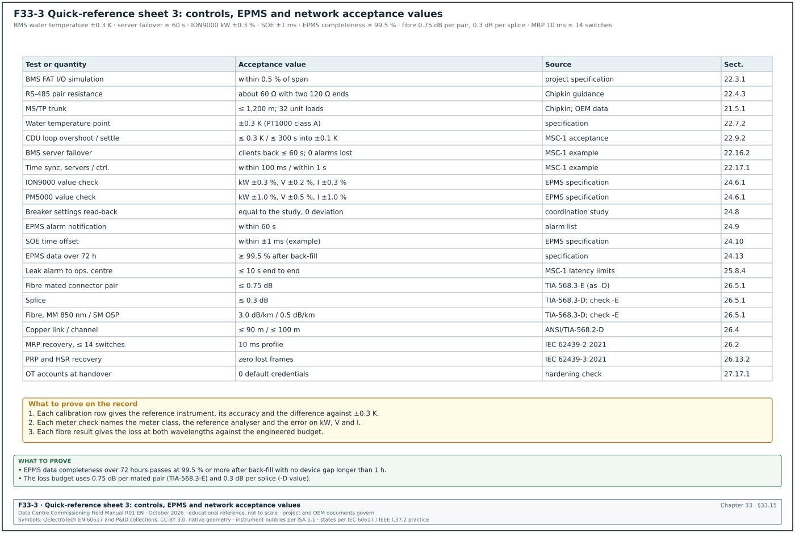
| Test or quantity | Acceptance value | Source document | Section |
|---|---|---|---|
| FAT I/O simulation | value in software within 0.5 % of span | project specification | 22.3.1 |
| Panel mains wiring IR | at least 1 MΩ at 500 V DC (project specification governs) | project specification | 22.3.1 |
| RS-485 trunk resistance | about 60 Ω across the pair with two 120 Ω terminations | Chipkin RS-485 guidance | 22.4.3 |
| MS/TP trunk length and loads | 1,200 m up to 76,800 bit/s; 32 unit loads per segment | Chipkin; Setra and Siemens documentation | 21.5.1 |
| Network checkout | no duplicate instance, MAC or network number; token rotation below 1 s on sensor trunks (MSC-1 example) | design | 22.5.1 |
| Water temperature sensor | ±0.3 K (PT1000 class A; class A tolerance ±(0.15 + 0.002 t) °C for t in °C above 0 per IEC 60751, ±0.24 °C at 45 °C) | specification; IEC 60751 | 22.7.2 |
| Air temperature / RH | ±0.5 K / ±5 % RH | specification | 22.7.2 |
| Water DP / water flow | ±2 % of span / ±3 % of reading | specification | 22.7.2 |
| Valve position feedback / AO position | ±5 % of stroke / within 5 % of command | specification | 22.7.2; 22.6 |
| Loop tuning, CDU TCS supply | steady ±0.2 K; overshoot ≤ 0.3 K; settling into ±0.1 K ≤ 300 s; ≤ 2 cycles | MSC-1 acceptance (project specification governs) | 22.9.2 |
| P1 alarm delivery | for example 3 s measured against a 5 s limit | alarm matrix | 22.11.2 |
| Trends | no gap longer than two intervals; time stamps within 1 s; buffer collected after a 1 hour disconnection | specification | 22.12.1 |
| Loss of communication | alarm within 60 s; other devices unaffected | MSC-1 example | 22.14.1 |
| Controller restart | boot ≤ 120 s; set points unchanged | MSC-1 example | 22.15.2 |
| Server failover | client reconnection ≤ 60 s; 0 alarms lost; 0 trend samples lost | MSC-1 example | 22.16.2 |
| Time synchronisation | servers within 100 ms; controllers within 1 s | MSC-1 example values | 22.17.1 |
| Sign-off state | override summary empty; no object out of service; issue ageing A 1 working day, B 7 working days, C 30 working days | MSC-1 limits | 22.19 |
33.15.1Checks on BMS values before the witness test
- Calibrate against a reference. Each analog point is compared with a reference instrument whose accuracy is better than the tolerance, for example ±0.05 K to ±0.1 K for water temperature.
- Time every alarm. The alarm record gives the condition time, the workstation time and the delay against its limit.
- Test the failures. Loss of communication, controller restart and server failover are tested on the installed network with the real controllers.
- Export the override summary. The sign-off attaches the override summary and the out-of-service list, both empty.
33.16Quick reference: EPMS and PME
| Test or quantity | Acceptance value | Source document | Section |
|---|---|---|---|
| Device configuration | every field equals the approved meter schedule; no tolerance applies to settings | meter schedule | 24.3 |
| Wiring diagnostics | positive sequence; current within ±30° of its voltage (pf above 0.87); clamp and meter within 2 % | practice | 24.4 |
| Communications | no error repeated more than once in 1 h; poll cycle within design | design | 24.5 |
| ION9000 value check | kW ±0.3 %, V ±0.2 %, I ±0.3 % (example tolerance) | specification | 24.6.1 |
| PM8000 value check | kW ±0.5 %, V ±0.3 %, I ±0.5 %; CTs class 0.2S | specification | 24.6.1 |
| PM5000 value check | kW ±1.0 %, V ±0.5 %, I ±1.0 %; CTs class 0.5S or 0.5 | specification | 24.6.1 |
| MicroLogic X metering | kW ±2.0 % (example comparison limit; the trip unit is Class 1 to IEC 61557-12, ±1 % from 10 % of Ib) | MicroLogic X user guide DOCA0102 | 24.6.1 |
| Energy register | increment within kW tolerance plus one count; PME equal within one count | specification | 24.7 |
| Breaker settings read-back | settings equal to the coordination study with zero deviation | coordination study | 24.8 |
| Alarm notification | active within set delay plus 10 s; notification within 60 s | alarm list | 24.9 |
| SOE offset | within ±1 ms of test-set time (example project value) | EPMS specification | 24.10 |
| Waveform trigger tests | 80 %/100 ms sag inside ITIC; 50 %/150 ms sag below the lower line | ITI curve | 24.11 |
| PUE calculation | ratio of total energies; dashboard equals hand calculation | ISO/IEC 30134-2:2026 (edition 2) | 24.12.2 |
| Data completeness over 72 h | ≥ 99.5 % after back-fill; no device gap longer than 1 h | specification (example values) | 24.13 |
| Cybersecurity | no default passwords; only listed ports; restore within RTO | specification | 24.14 |
| EPMS source stable to BMS | 2 s at the BMS controller | MSC-1 latency limits | 25.8.4 |
33.16.1Checks on EPMS values before the witness test
- Compare settings with zero tolerance. Meter and breaker settings are compared field by field with the approved schedule and the coordination study.
- Inject through the test block. The reference analyser uses the same CTs through the test block so that the comparison tests the meter and its wiring.
- Calculate PUE from energies. The PUE check uses the ratio of total energies and never an average of 15-minute PUE values.
- Count records. The 72-hour completeness count compares received records with devices × 4 per hour × 72 hours.
33.17Quick reference: fibre, copper and OT network
Figure F33-14 plots the TIA-568.3-D loss budget against link length for an OS2 campus link and an OM4 hall trunk, with the 10GBASE-LR and 10GBASE-SR channel limits.

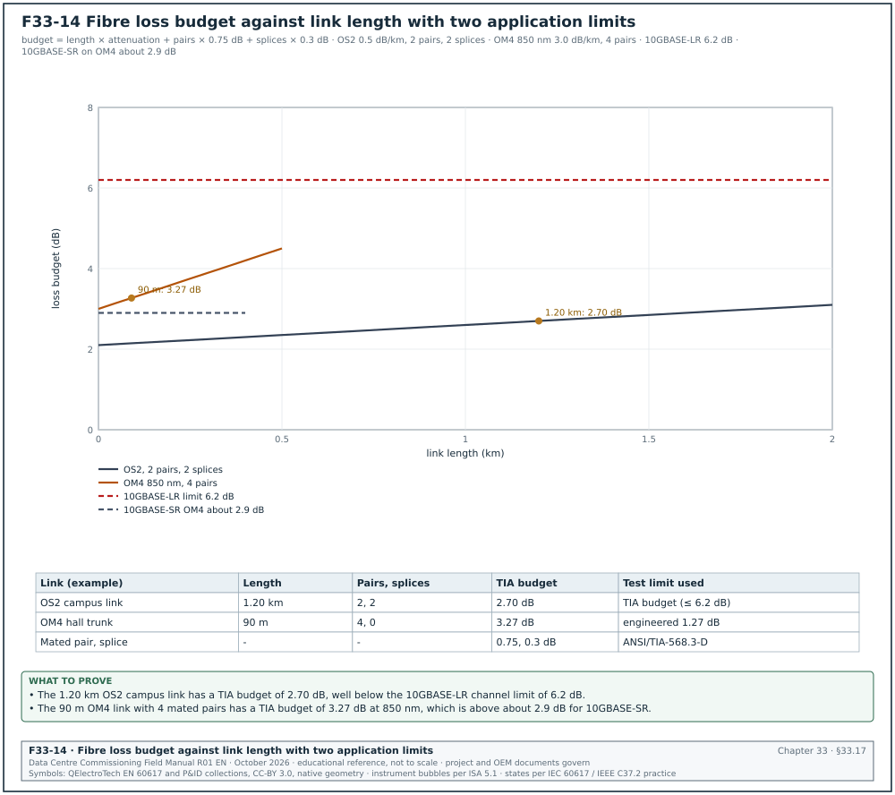
| Test or quantity | Acceptance value | Source document | Section |
|---|---|---|---|
| Mated connector pair | 0.75 dB maximum | ANSI/TIA-568.3-E (value as in -D, Fluke reproduction) | 26.5.1 |
| Splice | 0.3 dB maximum | ANSI/TIA-568.3-D value; check ANSI/TIA-568.3-E | 26.5.1 |
| Multimode cable 850 / 1300 nm | 3.0 / 1.5 dB/km | ANSI/TIA-568.3-D value; check ANSI/TIA-568.3-E | 26.5.1 |
| Single-mode inside plant / outside plant | 1.0 / 0.5 dB/km at 1310 and 1550 nm | ANSI/TIA-568.3-D (outside plant value verified, RF-33 6.12) | 26.5.1 |
| Reference-grade to standard-grade pair | 0.30 dB multimode, 0.50 dB single-mode | ISO/IEC 14763-3 | 26.5.1 |
| Tier 1 result | every fibre at or below the limit at both wavelengths; polarity as designed; length within ±5 % | specification | 26.8.4 |
| End face | IEC 61300-3-35 profile pass; zones A and B graded | IEC 61300-3-35:2022 | 26.7.2 |
| APC and UPC | never mate APC with UPC | practice | 26.4 |
| Copper permanent link / channel | 90 m / 100 m maximum; all parameters pass for the category | ANSI/TIA-568.2-D | 26.10.3 |
| MRP recovery | 500, 200 or 30 ms for rings up to 50 switches; 10 ms for rings up to 14 switches | IEC 62439-2:2021 | 26.2 |
| PRP and HSR recovery | zero lost frames | IEC 62439-3:2021 | 26.13.2 |
| RSTP recovery | project value (for example 1 s) | specification | 26.13.2 |
| 10GBASE-LR channel loss | 6.2 dB | IEEE 802.3 Clause 52, 10GBASE-L channel insertion loss (verified, RF-33 6.12) | 26.5.3 |
| 10GBASE-SR on OM4 | about 2.9 dB from transceiver data sheets (confirm against IEEE 802.3 clause 52, Table 52-6 OM4 row); 40/100GBASE-SR4 1.5 / 1.9 dB | IEEE 802.3 Tables 86-9 and 95-8 (draft values) | 26.5.3 |
33.17.1Checks on fibre and network values before the witness test
- Inspect before every test. Each end face is inspected and cleaned before the OLTS reference is set and before each link is measured.
- Write the engineered budget. The test limit is the engineered budget from the manufacturer's low-loss values where the application limit is lower than the TIA maximum.
- Compare wavelengths. Loss that rises at the longer wavelength points to a bend; the OTDR locates it.
- Count ring switches. An MRP ring with the 10 ms profile has no more than 14 switches.
33.18Quick reference: IST
| Test or quantity | Acceptance value | Source document | Section |
|---|---|---|---|
| IT load continuity | no loss of power to any rack PDU (both cords) in any single-failure scenario | OPR; Uptime Tier III or IV objective | 28.7.1 |
| UPS output on mode change | within the IEC 62040-3 class declared by the vendor (class 1, VFI-SS-111) (confirm the curve values against IEC 62040-3:2021 Figure 2, dynamic output performance class 1, in 5.3.4) | IEC 62040-3:2021 | 28.7.1 |
| IT input voltage | inside the ITIC curve | ITI (CBEMA) note | 28.7.1 |
| Generator ready | within 10 s where NFPA 110 Type 10 applies; project value for standby (for example 15 s to bus, 30 s to full load) | NFPA 110; specification | 28.7.1 |
| Generator load step | frequency dip ≤ 7 %, recovery ≤ 3 s; voltage dip ≤ 15 %, recovery ≤ 4 s | ISO 8528-5:2022 Table 4 as quoted by Kohler (verified, RF-33 6.2) | 28.7.1 |
| Rack inlet | 18 to 27 °C steady; A1 allowable 15 to 32 °C in a transient | ASHRAE TC 9.9, 5th edition (2021) | 28.7.1 |
| Inlet temperature change | ≤ 20 °C in any 1 h and ≤ 5 °C in any 15 min (tape equipment: ≤ 5 °C in 1 h) | ASHRAE TC 9.9 Thermal Guidelines, 5th edition (2021), reference card footnote (verified, RF-33 6.13) | 28.7.1 |
| TCS supply | set point ±1 K; MSC-1 45 °C set point, abort at 50 °C | OPR; IT vendor specification | 28.7.1 |
| TCS flow per rack | ≥ 139.2 L/min within 10 s of a CDU failover | specification | 28.7.1 |
| CHW and FWS recovery | set point ±0.5 K within the sequence time (for example 15 min after chiller restart) | sequence of operation | 28.7.1 |
| Alarms | every expected alarm within 10 s with correct text and priority; no unexpected P1 alarm | alarm matrix | 28.7.1 |
| SOE order | events of one scenario in correct order, 1 ms resolution | chapter 24 | 28.7.1 |
| Recovery | all systems back to the initial state with auto modes restored | specification | 28.7.1 |
| Retransfer parallel time (S01/S02) | ≤ 100 ms | MSC-1 IST script | 28.11.1 |
| Pre-action water at test point (S28) | project value (for example ≤ 60 s from the fire design calculation, within NFPA 13-2025 Table 8.2.4.3.2) | NFPA 13-2025; design | 28.13.1 |
| Entry gate | all 16 rows closed, or open rows accepted in writing with the affected scenarios removed | IST entry gate | 28.2.2 |
33.18.1Checks on IST values before test day
- Close the entry gate. The 16 entry rows are closed, or accepted in writing with the affected scenarios removed from the day plan.
- Agree the abort values. The abort values (for example TCS supply 50 °C) are written in the script and briefed to every test team.
- Synchronise all loggers. BMS, EPMS, UPS and generator logs share one time source so the SOE can be built at 1 ms resolution.
- Write the issue on the day. Every failed or conditional result gets an IST issue number on the day, as IST-DH3-014 and IST-DH3-022 in the MSC-1 records.
33.19Quick reference: administrative time limits
The administrative limits below are the MSC-1 values and the contract values quoted in chapters 05 to 09. The contract on a real project governs. FIDIC periods are calendar days. Figure F33-4 prints the limits on one sheet for the document controller and the QA/QC manager.

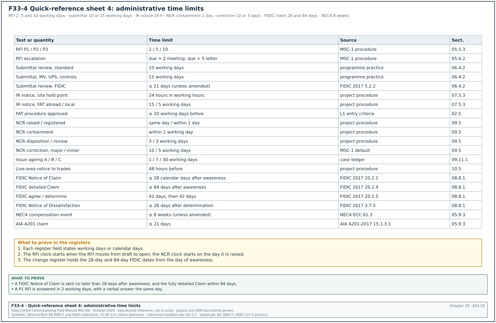
| Item | Time limit | Source document | Section |
|---|---|---|---|
| RFI P1 urgent | 2 working days; verbal answer the same day | project procedure (MSC-1) | 05.5.3 |
| RFI P2 normal with programme need | 5 working days | project procedure | 05.5.3 |
| RFI P3 normal | 10 working days | project procedure | 05.5.3 |
| RFI that does not fit a trigger | returned to sender within 2 working days | project procedure | 05.2.2 |
| RFI escalation | reminder at due date minus 2 working days; weekly meeting at due date plus 2; letter to the CM at due date plus 5 | project procedure | 05.6.2 |
| Classification of a clarification as a change | CM reviews within 5 working days | project procedure | 05.13 |
| Submittal review, FIDIC 2017 | not more than 21 days unless the Employer's Requirements state otherwise; the signed contract may amend it | FIDIC 2017 Sub-Clause 5.2.2 | 06.4.2 |
| Submittal review, UFGS 01 33 00 | at least 15 working days (QC manager); at least 20 working days (Contracting Officer) | UFGS 01 33 00 | 06.4.2 |
| Submittal review, hyperscale practice | 10 working days standard; 15 working days for MV, UPS and controls packages | project practice | 06.4.2 |
| MSRA approval before a high-risk task | at code A or B 5 working days before the task | MSC-1 KPI | 06.11.1 |
| Document review turnaround | ≤ 10 working days; 0 overdue more than 5 working days | MSC-1 KPI | 04.8 |
| IR notice, routine hold or witness point | 24 hours within working hours | project procedure | 07.5.3 |
| IR notice, FAT outside Indonesia / in Indonesia | 15 / 5 working days | project procedure | 07.5.3 |
| Authority inspection booking | at least 10 working days ahead | practice | 07.5.3 |
| FAT procedure approval | at least 10 working days before the test | L1 entry criteria | 02.3.3 |
| NCR raised and sent | the same working day | project procedure | 09.5 |
| NCR registered and notified | within 1 working day | project procedure | 09.5 |
| NCR containment | within 1 working day | project procedure | 09.5 |
| NCR disposition proposal / review | 3 working days / 3 working days | project procedure | 09.5 |
| NCR correction (MSC-1 default) | 10 working days major; 5 working days minor | project procedure | 09.5 |
| NCR closure KPI | median major ≤ 15, minor ≤ 8 working days | MSC-1 KPI | 09.11.1 |
| Issue and punch ageing | A ≤ 1, B ≤ 7, C ≤ 30 working days | case ledger | 09.8.2 |
| Notice to all trades before new live area | 48 hours before | project procedure | 10.5 |
| FIDIC Notice of Claim | no later than 28 days after awareness | FIDIC 2017 Sub-Clause 20.2.1 | 08.8.1 |
| FIDIC Engineer's notice that a claim is late | within 14 days | FIDIC 2017 Sub-Clause 20.2.2 | 08.8.1 |
| FIDIC fully detailed Claim | within 84 days after awareness | FIDIC 2017 Sub-Clause 20.2.4 | 08.8.1 |
| FIDIC agreement, then determination | 42 days, then 42 days | FIDIC 2017 Sub-Clauses 20.2.5 and 3.7 | 08.8.1 |
| FIDIC Notice of Dissatisfaction | within 28 days after the determination | FIDIC 2017 Sub-Clause 3.7.5 | 08.8.1 |
| NEC4 compensation event notification | within 8 weeks of becoming aware; the signed contract may amend it | NEC4 ECC clause 61.3 | 05.9.3 |
| AIA A201-2017 claim | within 21 days after the event or after the claimant first recognises the condition, whichever is later | AIA A201-2017 Section 15.1.3.1 | 05.9.3 |
| PCO ageing KPI | not more than 10 % of open PCOs older than 30 working days | MSC-1 KPI | 08.17 |
33.19.1Checks on registers that use these time limits
- Start the clock at the right event. The RFI clock starts when the RFI moves from draft to open; the NCR clock starts on the day the NCR is raised.
- Enter the calendar type. Each register field states working days or calendar days.
- Diary the contract notices. The FIDIC 28-day and 84-day dates are calculated on the day of awareness and entered in the change register.
- Book witnesses early. FAT witness visits outside Indonesia are notified 15 working days ahead for visas and travel.
- Escalate an overdue RFI by the ladder. On the due date the RFI manager records a committed date. At due date plus 2 working days the RFI is listed in the weekly coordination meeting. At due date plus 5 working days the contractor's project manager writes to the CM.
- Close NCRs with evidence. An NCR is closed only when the closure package holds the re-inspection IR and the retest record; an NCR closed without retest is reopened.
33.20Unit conversions
33.20.1Pressure, flow and length
| Quantity | Conversion | Where used |
|---|---|---|
| Pressure | 1 bar = 100 kPa = 14.504 psi | 18.3, 19.9, 20.7 |
| Pressure | 1 psi = 6.895 kPa = 0.06895 bar | 20.8 |
| Water column | 1 m of water = 9.81 kPa = 0.0981 bar; 24.6 m gives 2.41 bar | 18.3.6 |
| Low pressure | 1 Pa = 0.004015 inch of water; 1 inch of water = 249.1 Pa | 19.6, 20.6.3 |
| Flow | 1 L/s = 60 L/min = 3.6 m³/h = 15.85 US gpm | 19.1.2, 19.12 |
| Air flow | 1 m³/s = 3,600 m³/h = 2,119 cfm | 19.4, 19.7 |
| Length | 1 ft = 0.3048 m; 1 inch = 25.4 mm | 20.4.2 |
| Fibre length | 1 km = 1,000 m; 2,500 ft = 762 m | 21.5.1, 26.5 |
33.20.2Temperature, energy and electrical units
| Quantity | Conversion | Where used |
|---|---|---|
| Temperature | °F = °C × 1.8 + 32; a difference of 1 K = 1.8 °F | 19.2 |
| Temperature difference | 1 K = 1 °C difference | 18.10, 22.7 |
| Power | 1 kW = 3,412 Btu/h; 1 ton of refrigeration = 3.517 kW | 18.8 |
| Energy | 1 MWh = 1,000 kWh = 3.6 GJ | 24.12, 30.11 |
| Apparent power | S (kVA) = √3 × U (kV) × I (A) | 14.1.1 |
| Resistance prefixes | 1 GΩ = 1,000 MΩ; 1 TΩ = 1,000 GΩ; 1 mΩ = 1,000 µΩ | 13.4, 13.5 |
| Charge | 1 nC = 1,000 pC | 13.9 |
| Obscuration | 1 % per foot = about 3.3 % per metre | 20.4.2 |
| Optical power | dB loss = 10 log10 (P in / P out); 3 dB = half the power | 26.5 |
| Sound level | adding two equal sources raises the level by 3 dB | 15.12.2 |
33.20.3Water and fuel quantities
| Quantity | Conversion | Where used |
|---|---|---|
| Concentration | 1 mg/l = 1 mg/kg = 1 ppm for dilute water | 18.4.5 |
| Bacteria | cfu/ml and CFU/ml are the same unit (colony-forming units per millilitre) | 18.4.5, 19.10.1 |
| Conductivity | 1 mS/cm = 1,000 µS/cm | 19.10.1 |
| Fuel volume | 1 m³ = 1,000 L; 293.76 m³ = 293,760 L | 15.1.2 |
| Gas volume | Nm³ is m³ at 0 °C and 101.325 kPa | 15.12.1 |
33.21Formulas used in the manual with one worked line each
Each block below gives the formula, the meaning of the symbols and one worked line copied from the chapter named. The numbers are MSC-1 example values.
33.21.1Electrical current and short-circuit current
Full-load current of a three-phase transformer: I = S / (√3 × U), with S in kVA and U in kV.
Worked example: Block transformer 2.5 MVA at 0.415 kV: I = 2,500 / (√3 × 0.415) = 3,478 A (14.1.1).
Prospective short-circuit current at the LV terminals with the source neglected: Isc = I / uk. With the source included: Isc = I / (uk + S / Ssc).
Worked example: Isc = 3,478 / 0.06 = 57,970 A, about 58 kA; with the 457 MVA source, 2.5 / 457 = 0.55 % and Isc = 3,478 / (0.06 + 0.0055) = 53,100 A. The switchboard Icw and the breaker Icu must exceed 58 kA (14.1.1).
Generator rated current: I = S / (√3 × U).
Worked example: 3,600,000 / (√3 × 20,000) = 103.9 A per set (15.1.2).
33.21.2Insulation indices and temperature correction
Polarisation index PI = R10 min / R1 min. Dielectric absorption ratio DAR = R60 s / R30 s. Temperature correction of IR to 20 °C with the halving rule: the value halves for each 10 °C rise, so R20 = R × 2^((T − 20) / 10) (confirm the correction factor against ANSI/NETA ATS-2025 Table 100.14). Figure F33-15 plots the IR minimums of NETA ATS Tables 100.1 and 100.5 by voltage class on a logarithmic scale.

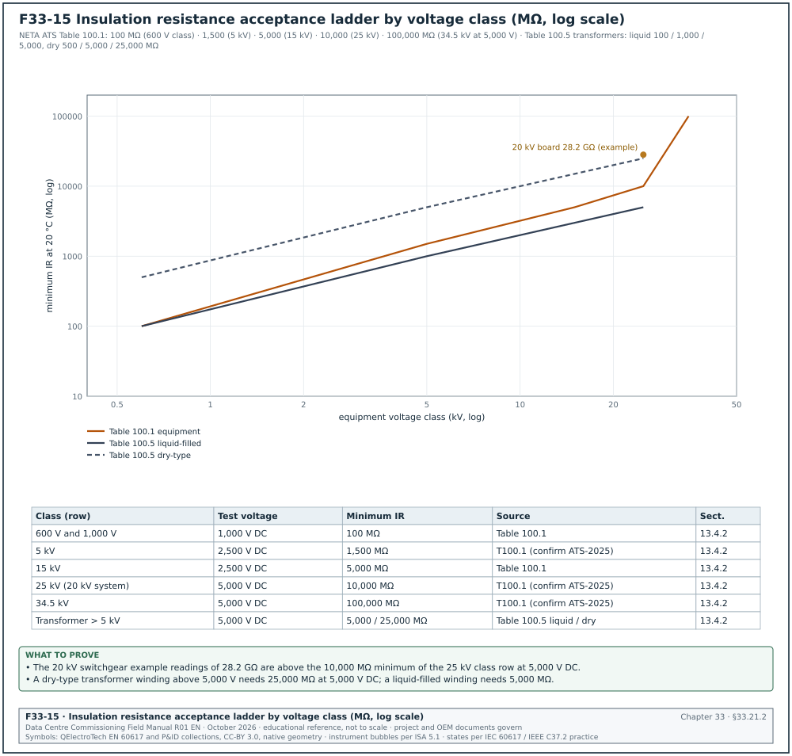
Worked example: Alternator B2-GEN-07: PI = 9,240 / 3,850 = 2.40, above the minimum of 2.0 (15.4.2). Transformer TX-A at 30 °C: 6,200 MΩ × 2.0 = 12,400 MΩ at 20 °C, above 5,000 MΩ (13.4.3).
Winding resistance corrected to 75 °C for copper: R75 = R × (235 + 75) / (235 + T).
Worked example: TX-A phase A: R75 = 0.4120 × 310 / 263 = 0.4856 Ω against 0.4848 Ω factory value, +0.17 % (13.7.3).
33.21.3Tan δ tip-up and contact resistance rule
Tip-up = mean TD at 1.5 U0 − mean TD at 0.5 U0, in units of 10⁻³. Contact resistance investigation limit = lowest pole value × 1.5.
Worked example: Cable phase L3: tip-up = 7.00 − 0.80 = 6.20, which is in the "further study advised" band of 5 to 80 (13.8.5). Breaker Q11: limit = 28 + 14 = 42 µΩ, so L3 at 45 µΩ is investigated (13.5.2).
33.21.4Protection timing and CT voltage
IEC standard inverse curve: t = TMS × 0.14 / (M^0.02 − 1), where M is the multiple of the setting. CT voltage needed at the accuracy limit: Vk ≥ ALF × In × (Rct + Rb).
Worked example: Q11 51N at TMS 0.10 and M = 2: t = 0.1 × 0.14 / 0.01396 = 1.003 s; measured 1.012 s, error +0.9 % (13.10.2). Feeder CT 1500/1 A 5P20: 20 × (4.5 + 6.8) = 226 V (13.6.2).
33.21.5Generator transient and synchronising
Frequency limit = rated frequency × (1 − dip). Phase advance during breaker closing = slip × 360° × closing time. Load sharing error = (set kW − average kW) / rated kW.
Worked example: G3 dip 7 % at 50 Hz: 50 × 0.93 = 46.5 Hz (15.2.3). Advance angle: 0.05 × 360 × 0.080 = 1.44° (15.10.4). Sharing: (1,890 − 1,765) / 2,880 = +4.3 % (15.10.5).
Oxygen correction of emissions: C ref = C measured × (21 − O2 ref) / (21 − O2 measured).
Worked example: NOx 1,450 × (21 − 15) / (21 − 11.2) = 888 mg/Nm³ (15.12.1).
33.21.6UPS efficiency and meter error
Efficiency η = P out / P in. Meter error = (meter − reference) / reference.
Worked example: η = 1,562.5 / 1,601.9 = 97.54 % at 62.5 % load (16.6.9). Meter error = (1,571.0 − 1,562.5) / 1,562.5 = +0.54 % (16.9.5).
33.21.7Earthing and power quality
Wenner soil resistivity ρ = 2π a R. Short-circuit ratio = ISC / IL. Long-term flicker Plt = (Σ Pst³ / 12)^(1/3).
Worked example: a = 4 m, R = 2.0 Ω: ρ = 2π × 4 × 2.0 = 50.3 Ω·m (17.2.2). ISC/IL = 31,500 / 711.8 = 44.3, in the "20 to < 50" row (17.10.5). Plt = ((11 × 0.0429 + 0.729) / 12)^(1/3) = 0.46, below 1 (17.12.1).
33.21.8Pressure test and water flow
Test pressure = 1.5 × design pressure (ASME B31.9). Temperature effect on a liquid-full pipe = ΔT × pressure change per K. Velocity v = Q / A.
Worked example: Fuel header: 1.5 × 6.0 = 9.0 bar (15.5.3). FWS riser: 0.3 K × 3.5 bar/K = 1.05 bar predicted fall (18.3.4). FWS main: 232 L/s / 114.0 L/s per m/s = 2.0 m/s in DN400 (18.4.3).
33.21.9Heat transfer in water and air
Liquid heat Q (kW) = cp,v × V × ΔT, with cp,v = 4.138 kJ/(L·K) for the TCS coolant and 4.17 for water. Air heat Q (kW) = 1.206 × V (m³/s) × ΔT (K).
Worked example: Zone Z2: Q = 4.138 × 58.1 × 9.92 = 2,385 kW, −0.6 % of the 2,400 kW input (19.14.6). Flow for 2,400 kW at 10 K: 2,400 / (4.138 × 10) = 58.0 L/s (19.1.2). Fan wall FW-04: Q = 1.206 × 13.21 × 11.6 = 184.8 kW, 97.8 % of the 189 kW rating (19.7.2).
Containment leakage ratio = leakage flow at 5 Pa / aisle design airflow.
Worked example: 0.55 / 42.1 = 1.3 %, below the 3 % project limit (19.6.3).
33.21.10Fire formulas
Halocarbon agent quantity W = (V / S) × C / (100 − C), with S = k1 + k2 × T. Battery capacity = (I standby × 24 h + I alarm × 5/60 h) × 1.20. Required sound level = ambient + 15 dB.
Worked example: B2-ER-03: S = 0.0664 + 0.000274 × 20 = 0.07188 m³/kg; W = (640 / 0.07188) × 4.5 / 95.5 = 419.5 kg (20.6.2). FACP B2-FACP-03: (2.80 × 24 + 9.60 × 5/60) × 1.20 = 81.6 Ah (20.2.3). DH3: 78 + 15 = 93 dBA (20.5.1).
33.21.11Fibre loss budget
Loss budget = length × attenuation + connector pairs × 0.75 dB + splices × 0.3 dB.
Worked example: OS2 campus link: 1.20 × 0.5 + 2 × 0.75 + 2 × 0.3 = 0.60 + 1.50 + 0.60 = 2.70 dB (26.5.3). OM4 link: 0.090 × 3.0 + 4 × 0.75 = 3.27 dB at 850 nm (26.5.3).
33.21.12PUE and data completeness
PUE = Σ facility energy / Σ IT energy over the same period. Completeness = records received / (devices × records per hour × hours).
Worked example: Building B2: PUE = 1,054.0 / 863.9 = 1.2200 (24.12.2). Expected records = 431 × 4 × 72 = 124,128; first count 123,624 = 99.59 % (24.13).
33.21.13Commissioning KPIs
First-pass yield = tests passed at attempt 1 / tests with attempt 1 completed. Retest ratio = (total attempts − unique tests) / unique tests. Defect density = issues raised / MW of IT capacity in scope. Latency budget = sum of every stage delay from sensor to the person who acts.
Worked example: FPY = 331 / 379 = 87.3 %; retest ratio = (439 − 379) / 379 = 0.16 (30.3.4). Defect density = 737 / 36 = 20.5 issues per MW (30.3.7). CDU leak tray latency total 5.15 s against 10 s (25.8.2).
33.22Index of worked examples by tag and chapter
The index lists every "Worked example" block of chapters 01 to 30 in section order. The tag column gives the equipment or record tags named in the example. The building prefix (B1 to B4) and the hall code (DH1 to DH3) show where in the MSC-1 example campus the record belongs. Rows marked "MSC-1 campus values" use campus-level MSC-1 numbers without a device tag.
33.22.1Chapters 01 to 06: references, process, documents, RFIs and submittals
This part of the index lists 48 worked examples. Figure F33-16 shows how an equipment tag such as B2-DH3-UPS-A1 and a test record ID such as MEC-L4-CHW-B2-STG-01 are built, so that a tag in the index can be read field by field.

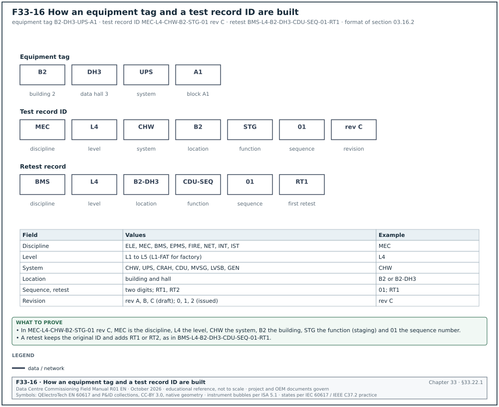
| Tag | Section | Subject of the section |
|---|---|---|
| MSC-1 campus values | 01.2.2 | Rules for applying the hierarchy |
| B2-A1-01 | 01.5.2 | How the electrical standards are used together |
| B2-0315, B3-021 | 01.13.3 | Procedure to check and change an edition |
| B2-DH3-A1-01, B2-0402 | 01.16.2 | Script source column format |
| B1-007, B1-0122 | 01.17 | Worked examples of using the library |
| B1-0122 | 01.17 | Worked examples of using the library |
| MSC-1 campus values | 01.17 | Worked examples of using the library |
| B2-DH3-CRAH-14, B2-DH3-CDU-07 | 02.6.2 | Rules for tags |
| B2-DH3-A1-01, B2-DH3-A1 | 02.7.1 | UPS ladder |
| B2-CHW, B2-01 | 02.7.2 | Chiller ladder |
| B2-DH3, B2-AIR | 02.7.3 | CRAH ladder |
| B2-DH3 | 02.7.4 | BMS ladder |
| B2-EPMS | 02.7.5 | EPMS ladder |
| B2-DH3, B2-FIRE | 02.7.6 | Fire systems ladder |
| MSC-1 campus values | 02.12.3 | Campus sequencing table |
| B2-DH3-A1-M2-01, B2-DH3-A1-01 | 03.8.2 | Filled L3 checklist for a UPS module |
| B2-STG-01, B2-CHW | 03.9.3 | Filled 20-step L4 chiller staging script |
| B2-DH3-A1-01-RT1, B2-DH3-A1-01 | 03.17.3 | Script register fields |
| B2-STG-01, B2-CHW | 03.18 | Document dependencies |
| MSC-1 campus values | 04.3.2 | Revision codes |
| MSC-1 campus values | 04.4.4 | Naming equipment tags and documents together |
| MSC1-EDC-B2-00-DR-E-2101 | 04.7.4 | Distribution matrix |
| MSC1-UPS-B2-01-DR-X-0031 | 04.8.3 | Calculating turnaround and the due date |
| MSC1-BMC-B2-01-SH-BM-0004, B2-BM-0004-01 | 04.10.2 | As-built process |
| MSC1-CXA-B2-01-RP-CX-4012, MSC1-BMC-B2-01-SP-BM-0002 | 04.12.2 | Rules for test scripts and checklists |
| MSC-1 campus values | 04.13.3 | Handover of the record set |
| MSC-1 campus values | 05.8.4 | Ageing histogram |
| RFI-B2-MEC-0233 | 05.9.3 | Notice periods in common contract forms |
| B2-MVS-TQ-017 | 05.11.2 | TQ fields in addition to the RFI fields |
| MSC1-EDC-B2-00-DR-E-2101, B2-DH3-LVMSB-A1 | 05.12.1 | Electrical RFIs |
| B2-DH3-UPS-A1, RFI-B2-ELE-0156 | 05.12.1 | Electrical RFIs |
| MSC1-EDC-B2-ZZ-RP-E-0300, MSC1-EDC-B2-ZZ-CA-E-0301 | 05.12.1 | Electrical RFIs |
| MSC1-MDC-B2-01-SP-M-0011, RFI-B2-MEC-0233 | 05.12.2 | Mechanical RFIs |
| RFI-B2-MEC-0248 | 05.12.2 | Mechanical RFIs |
| RFI-B2-MEC-0262 | 05.12.2 | Mechanical RFIs |
| MSC1-BMC-B2-01-SH-BM-0004, RFI-B2-BMS-0087 | 05.12.3 | BMS RFIs |
| RFI-B2-BMS-0095 | 05.12.3 | BMS RFIs |
| RFI-B2-EPM-0041 | 05.12.4 | EPMS and PME RFIs |
| RFI-B2-EPM-0049 | 05.12.4 | EPMS and PME RFIs |
| RFI-B2-ICT-0028, B2-01-118 | 05.12.5 | Fibre optic RFIs |
| RFI-B2-ICT-0033 | 05.12.5 | Fibre optic RFIs |
| RFI-B2-FIR-0019 | 05.12.6 | Fire protection RFIs |
| RFI-B2-FIR-0024 | 05.12.6 | Fire protection RFIs |
| MSC-1 campus values | 06.2.2 | Calculating the latest submit date |
| B2-M-SUB-0031, RFI-B2-BMS-0087 | 06.6.4 | Modbus and BACnet map review fields |
| MSC-1 campus values | 06.7.5 | Substitution requests |
| B2-MVS-01 | 06.9.3 | Risk rating method |
| B2-DH3-UPS-A1, RFI-B2-ELE-0156 | 06.10.3 | FAT record fields |
33.22.2Chapters 07 to 12: ITPs, change, quality, permits, reports and handover
This part of the index lists 42 worked examples.
| Tag | Section | Subject of the section |
|---|---|---|
| B2-MV-F09, B2-ELE-0498 | 07.6.5 | Consequences of missing a hold point |
| B2-MV-F07 | 07.9.3 | Worked example of five test lines |
| B2-MEC-0212 | 07.10.3 | Worked example of the pressure test line |
| B2-DH3-BMS-CP-05, IR-B2-BMS-0133-R1 | 07.11.3 | Worked example of the firmware hold point |
| B2-DH3-IDA-01, B2-MDA-01 | 07.12.3 | Worked example of the loss budget line |
| B2-ELE-0011 | 07.13.2 | Worked example of a weekly IR report |
| MSC-1 campus values | 08.14.2 | Technical impact |
| B2-DH3-0412, B2-E-0388 | 08.15.2 | Applying the decision tree |
| MSC-1 campus values | 08.16.1 | FIDIC 2017 claim timeline |
| MSC-1 campus values | 08.16.2 | NEC4 compensation event timeline |
| B2-ELE-0014 | 09.7.3 | The 5-why method |
| MSC-1 campus values | 09.11.2 | Ageing calculation |
| B2-DH2-BW-03, B2-DH3-CDU-07 | 09.13.1 | NCR on busway joint torque |
| B2-DH3-CDU-07, B2-DH3-CDU-03 | 09.13.2 | NCR on a CDU filter mesh |
| B2-DH3-CDU-03, B2-DH2-IDA-02 | 09.13.3 | NCR on a Modbus register map version |
| B2-DH2-IDA-02, B2-MDA-01 | 09.13.4 | NCR on fibre polarity |
| MSC-1 campus values | 10.1.7 | Permit register fields and KPIs |
| B1-MVS-01-P04, B1-HV-0112 | 10.3.4 | MV proving dead and earthing at 20 kV |
| B1-MVS-01 | 10.4.5 | 20 kV ring energisation of one MSC-1 building |
| B2-DH3-UPS-A1 | 10.4.6 | Switching programme for a UPS maintenance bypass isolation |
| B1-HV-003, B1-HV-004 | 10.5.5 | The energised-zone declaration and the live boundary |
| B2-H-0611, B2-G-0614 | 10.6.3 | SIMOPS RACI |
| B2-DH3-RPP-A1-07 | 10.7.5 | PUIL 2020 and IEC 60364-6 initial verification |
| MSC-1 campus values | 10.8.3 | KPIs for the energisation phase |
| B1-DH2 | 11.3.2 | Rules for writing minutes |
| MSC-1 campus values | 11.4.2 | Action closure and ageing |
| B1-2026-11-05, B1-DH2-CRAH-09 | 11.5.2 | Daily report fields |
| B1-DH2 | 11.6.4 | weekly commissioning report for data hall B1-DH2 |
| B1-DH2 | 11.7.5 | Float and the critical path |
| MSC-1 campus values | 11.7.6 | Schedule quality checks: the DCMA 14-point assessment |
| B1-DH2 | 11.8.3 | Weekly work plan and percent plan complete |
| B1-DH2 | 11.9.3 | Schedule performance from the S-curve |
| B1-DH1 | 12.1.4 | Ready for service and ready for workload |
| B1-CHW-01 | 12.3.2 | turnover package for the chiller plant of building B1 |
| MSC-1 campus values | 12.4.2 | Common rejection reasons for O&M manuals |
| RMU-03 | 12.6.3 | Verification of as-built drawings by sampling |
| B1-CHW-BV-01 | 12.7.4 | Data flow and validation |
| B1-CHW-01 | 12.8.3 | Special tools |
| MSC-1 campus values | 12.9.3 | Training record fields |
| B2-DH3 | 12.10.2 | Start date rules |
| B1-CHW-CH-02 | 12.11.3 | Defects register fields |
| B1-DH1 | 12.13.2 | Operations readiness on a data-centre campus |
33.22.3Chapters 13 to 17: MV, LV, generators, UPS and earthing
This part of the index lists 69 worked examples. Figure F33-17 shows the number of worked examples in each part of the index and names a filled record for eight systems.

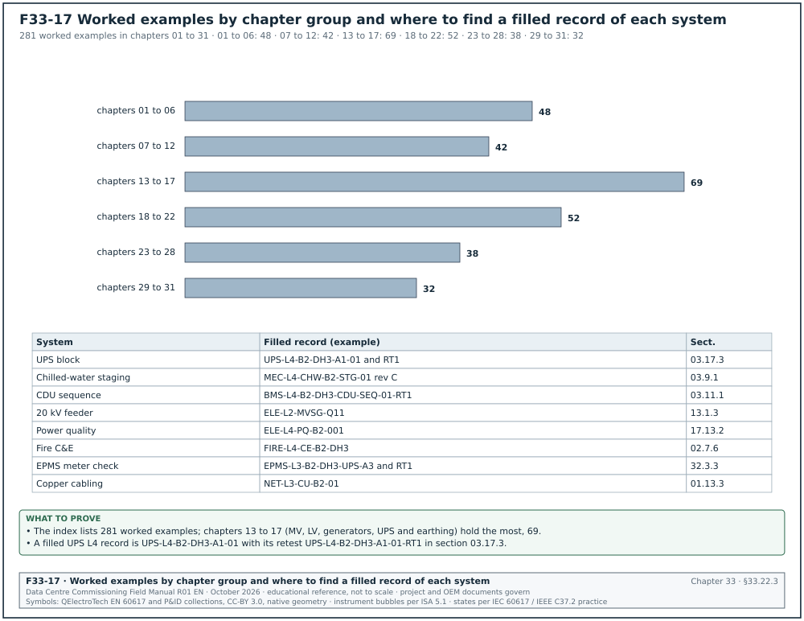
| Tag | Section | Subject of the section |
|---|---|---|
| TX-A | 13.4.3 | Temperature correction |
| Q11 | 13.5.2 | Contact resistance |
| Q11 | 13.5.3 | Timing and travel |
| Q11 | 13.6.2 | CT tests |
| B2-DH3-TX-A1 | 13.7.2 | Turns ratio test (TTR) |
| TX-A | 13.7.3 | Winding resistance |
| TX-A | 13.7.6 | Sweep frequency response analysis (SFRA) |
| TX-A | 13.7.7 | Oil tests for liquid-filled transformers |
| B2-MV-C-011 | 13.8.4 | Test set capacity |
| B2-MV-C-011 | 13.8.5 | Tan δ (dissipation factor) test |
| Q01, Q12 | 13.9.5 | Online PD screening of switchgear after energisation |
| Q11 | 13.10.2 | Secondary injection |
| Q11 | 13.10.3 | Primary injection |
| MSC-1 campus values | 13.11.2 | Phasing |
| MSC-1 campus values | 14.1.1 | What the LV system is |
| B2-DH3-MSB-A1 | 14.4.3 | Torque verification |
| B2-DH3-MSB-A1, B2-DH3-BW-A1 | 14.5.3 | Busway test procedure |
| MSC-1 campus values | 14.6.3 | Long-time trip time calculation |
| MSC-1 campus values | 14.6.5 | Primary injection of ACBs |
| MSC-1 campus values | 14.6.6 | MCCB field tests to NEMA AB 4 |
| MSC-1 campus values | 14.6.7 | ACB mechanical, electrical and contact resistance tests |
| B2-L1-04 | 14.7.2 | Tests and acceptance values |
| B2-DH3 | 14.8.2 | Main-tie-main and block transfer tests |
| MSC-1 campus values | 14.9.3 | IDMT timing example |
| MSC-1 campus values | 14.9.4 | Undervoltage and frequency example |
| MSC-1 campus values | 14.9.5 | Differential example |
| MSC-1 campus values | 14.10.2 | Verification steps |
| B2-DH3-MSB-A1 | 14.12.3 | Label content |
| UPS-A1 | 14.13.2 | Temperature difference bands |
| MSC-1 campus values | 15.1.2 | The MSC-1 generator plant |
| MSC-1 campus values | 15.2.4 | Load acceptance steps and brake mean effective pressure |
| MSC-1 campus values | 15.3.3 | Factory acceptance test content |
| B2-GEN-07 | 15.4.2 | Electrical installation and alternator tests |
| B2-FO-HDR-01 | 15.5.3 | Pressure test of fuel piping |
| MSC-1 campus values | 15.5.6 | Transfer system functional test |
| B2-GEN-07 | 15.7.4 | Acceptance criteria |
| B2-GEN-07 | 15.8.4 | Acceptance and filled record |
| MSC-1 campus values | 15.9.1 | Start-time test (NFPA 110 Type 10) |
| MSC-1 campus values | 15.10.4 | Synchronising test procedure |
| B2-GEN-11, B2-GEN-04 | 15.10.5 | Load sharing test |
| MSC-1 campus values | 15.11.2 | Secondary injection and trip test |
| MSC-1 campus values | 15.12.1 | Emissions measurement |
| MSC-1 campus values | 15.12.2 | Noise measurement |
| MSC-1 campus values | 15.13.4 | Point-to-point test |
| MSC-1 campus values | 15.14.2 | Integrated test (Level 5) for the generator plant |
| MSC-1 campus values | 16.3.2 | What the site repeats and why |
| B2-DH3-UPS-A1 | 16.6.3 | Step load test |
| MSC-1 campus values | 16.6.9 | Efficiency test |
| B2-DH3-UPS-A1 | 16.6.10 | Full-load battery autonomy test |
| B2-DH3-BAT-A1-S1 | 16.7.2 | Battery installation checks (Level 2) |
| B2-DH3-BAT-B1-S2 | 16.7.3 | Lead-acid capacity test (IEEE 450 and IEEE 1188 method) |
| B2-DH3-BAT-A1 | 16.7.6 | Lithium-ion battery commissioning |
| B2-DH3-STS-03 | 16.8.3 | STS transfer timing test |
| B2-DH3-BW-A04 | 16.9.2 | Busway installation and tests |
| B2-DH3-UPS-A1 | 16.9.5 | Metering accuracy test |
| B2-DH3 | 16.11 | Integrated tests for the UPS and rack power chain (Level 5) |
| B2-DH3-A1 | 17.1.3 | TN-S distribution and the single N-PE link |
| MSC-1 campus values | 17.2.2 | Wenner four-pin method |
| MSC-1 campus values | 17.3.5 | Worked example |
| B2-DH3 | 17.5.2 | Continuity of protective and bonding conductors |
| MSC-1 campus values | 17.6.3 | External LPS inspection and tests |
| B2-DH3-MSB-A1-SPD, B2-DH3-MSB-A1 | 17.7.3 | Installation checks and tests |
| MSC-1 campus values | 17.10.5 | Worked examples of the ISC/IL ratio |
| TX-A | 17.10.5 | Worked examples of the ISC/IL ratio |
| TX-A | 17.10.5 | Worked examples of the ISC/IL ratio |
| TX-A | 17.10.6 | Reading a harmonic spectrum |
| UPS-A1 | 17.11.3 | Worked example of event review |
| MSC-1 campus values | 17.12.1 | Flicker |
| TX-A | 17.13.3 | Cross-check with the permanent meters |
33.22.4Chapters 18 to 22: plant, air and liquid cooling, fire and BMS
This part of the index lists 52 worked examples.
| Tag | Section | Subject of the section |
|---|---|---|
| MSC-1 campus values | 18.1.2 | MSC-1 plant numbers |
| MSC-1 campus values | 18.3.4 | Temperature effect on a liquid-full pipe |
| MSC-1 campus values | 18.4.3 | Flushing velocity |
| B2-DH1 | 18.4.7 | Filled cleaning release record |
| MSC-1 campus values | 18.7.2 | Pump curve, system curve and duty point |
| MSC-1 campus values | 18.7.5 | Filled pump test record |
| MSC-1 campus values | 18.8.2 | AHRI 550/590 tolerance equation |
| B2-CH-03, B2-CH03-CAP | 18.8.5 | Site capacity check |
| B2-DC-12 | 18.9.1 | Dry coolers |
| B2-FWS-TT-101 | 18.10.2 | Calibration record |
| MSC-1 campus values | 18.11.2 | Inputs to the integrated systems test |
| B2-DH3 | 19.1.2 | Flow formulas used in every test |
| MSC-1 campus values | 19.2.2 | Liquid-cooling classes |
| B2-MAU-01 | 19.4.2 | Pitot-tube traverse procedure |
| B2-DH3-FW-04 | 19.4.3 | Fan inlet-ring (k-factor) method for fan walls |
| B2-DH3 | 19.6.3 | Aisle pressurisation test procedure |
| B2-DH3-FW-04 | 19.7.2 | Capacity test procedure |
| B2-DH3-Z2-RM-A-01, B2-DH3-Z2-RM-A | 19.9.2 | Hydrostatic test procedure |
| MSC-1 campus values | 19.10.2 | Flushing velocity |
| CDU-03 | 19.12.2 | Flow per rack |
| CDU-03 | 19.13 | CDU functional tests and failover |
| MSC-1 campus values | 19.14.2 | Load equipment for an MSC-1 hall |
| MSC-1 campus values | 19.14.6 | Energy balance |
| MSC-1 campus values | 19.15.1 | Mechanical load component |
| MSC-1 campus values | 20.1.2 | MSC-1 fire water numbers |
| B2-FACP-03 | 20.2.3 | Secondary power (batteries) |
| MSC-1 campus values | 20.3.3 | Device test procedure |
| B2-DH3-ASD-02 | 20.4.3 | ASD commissioning procedure |
| B2-DH3 | 20.5.1 | Audibility |
| B2-ER-03 | 20.6.2 | Design concentration and agent quantity |
| B2-ER-03 | 20.6.3 | Room integrity test (door fan test) |
| B2-DH3-PA-01 | 20.7.4 | Trip test and water delivery time |
| B2-FP-01 | 20.8.1 | Fire pump acceptance test (NFPA 20) |
| B2-ER-03, B2-ER-04 | 20.9.6 | Testing the matrix row by row |
| B2-DH3 | 20.11.2 | Level 5 scenarios |
| MSC-1 campus values | 20.12.3 | Preparing for the Damkar witness test |
| MSC-1 campus values | 21.4.1 | Device instance numbering |
| MSC-1 campus values | 21.4.2 | Network numbers |
| MSC-1 campus values | 21.5.3 | trunk timing for rack-row sensors |
| B2-DH3-CDU-07 | 21.7.5 | 32-bit word order |
| MSC-1 campus values | 21.7.7 | Modbus RTU polling cycle for leak panels |
| B2-DH3-CRAH-11 | 21.10.4 | CRAH points list extract, 40 points |
| B2-DH3-CDU-07 | 21.10.5 | CDU points list extract, 30 points |
| MSC-1 campus values | 21.12.2 | trend storage for one hall |
| B2-DH3-BMS-AS-01, B2-DB-MECH-UPS-A | 21.15.2 | Power to controls |
| MSC-1 campus values | 22.3.2 | FAT sample for automation server panel B2-DH3-BMS-AS-01 |
| B2-DH3-CDU07, B2-0457 | 22.6.3 | filled P2P sheet for CDU 07 |
| ISS-B2-0812 | 22.7.3 | Calibration steps for a water temperature sensor |
| B2-DH3-CRAH-11-CV-01 | 22.8.2 | CRAH 11 chilled-water valve stroke record |
| MSC-1 campus values | 22.9.3 | CDU 07 supply temperature loop response |
| B2-DH3-CDU-SEQ-01 | 22.10.3 | filled sequence test extract for CDU pump failover and zone staging |
| MSC-1 campus values | 22.15.2 | restart record for plant controller B2-PR-BMS-PLC-02 |
33.22.5Chapters 23 to 28: EPMS, integration, network, DCIM and IST
This part of the index lists 38 worked examples. Figure F33-18 maps the record IDs used in the worked examples by commissioning level and discipline.

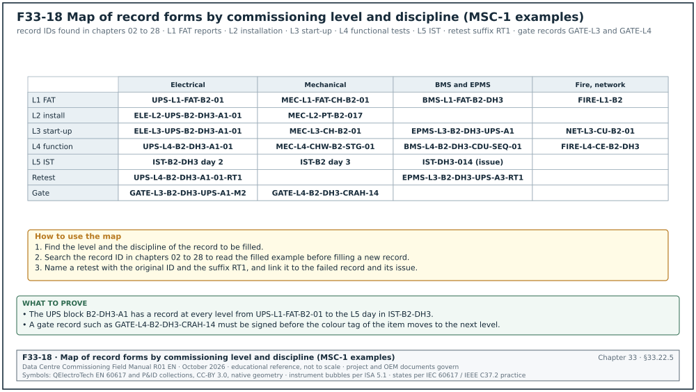
| Tag | Section | Subject of the section |
|---|---|---|
| MSC-1 campus values | 23.3.3 | The four databases |
| MSC-1 campus values | 23.5.1 | Current transformers |
| MSC-1 campus values | 23.6.4 | Serial line loading and poll cycle |
| B2-INC-1, B2-INC-2 | 23.9.4 | Hierarchies and virtual meters |
| MSC-1 campus values | 23.12.2 | Licence sizing steps |
| MSC-1 campus values | 23.15 | EPMS device count and gateway list for one MSC-1 building |
| B2-DH3-LVMSB-A1 | 24.4.1 | How each wiring fault appears |
| B2-DH3-LVMSB-A1 | 24.6.3 | Meter verification sheet (filled example) |
| MSC-1 campus values | 24.7 | Energy register checks |
| MSC-1 campus values | 24.9.1 | Alarm flood test |
| B2-DH3-LVMSB-A1-Q1, B2-DH3-LVMSB-A1 | 24.10.1 | SOE test record (filled example) |
| B2-INC1, B2-INC2 | 24.12.2 | PUE calculation check |
| B2-ER2-SW03 | 24.13 | Data completeness over 72 hours |
| IF-019, IF-023 | 25.2.5 | Using the MIL |
| ICD-25 | 25.3.2 | ICD-25-021 extract, CDU to BMS |
| INT-L4, ICD-25 | 25.7.2 | filled integration test record, IF-018 EPMS to BMS source stable |
| MSC-1 campus values | 25.8.2 | CDU leak tray alarm to the campus operations centre |
| IF-036 | 25.8.3 | effect of a failed device on a shared Modbus port |
| MSC-1 campus values | 26.1.3 | Switch count for one building |
| MSC-1 campus values | 26.5.3 | Steps to calculate and use a loss budget |
| MSC-1 campus values | 26.5.3 | Steps to calculate and use a loss budget |
| B2-MDF | 26.9.6 | Worked trace interpretation |
| B2-ER1-EPMS-SW01, B2-EPMS-RING1 | 26.13.2 | Ring failover test |
| B2-DH3-R05-C12, B2-DH3-R05 | 27.2.2 | Capacity fields |
| B2-DH3-R05-C12-TS-TOP, B2-DH3 | 27.3.3 | DCIM point-to-point log fields |
| MSC-1 campus values | 27.4.5 | Asset counts for one MSC-1 building |
| B2-DH3 | 27.5.4 | PM schedule rules |
| MSC-1 campus values | 27.7.2 | Storage calculation |
| B2-DH3-SD-112, B2-FZ-DH3 | 27.8.3 | Common errors found in door tests |
| MSC-1 campus values | 27.10.5 | Conduit verification test |
| MSC-1 campus values | 27.12.2 | Account rules |
| MSC-1 campus values | 27.14.2 | Restore test procedure |
| MSC-1 campus values | 28.5.5 | Instrument register fields |
| MSC-1 campus values | 28.6.4 | Load plan for one MSC-1 hall |
| MSC-1 campus values | 28.11.1 | Filled record of S01 and S02 |
| MSC-1 campus values | 28.12.1 | Filled record of S16 |
| MSC-1 campus values | 28.13.1 | Filled record of S28 |
| MSC-1 campus values | 28.14.2 | Calculations |
33.22.6Chapters 29 and 30: issue library, data and KPIs
This part of the index lists 32 worked examples.
| Tag | Section | Subject of the section |
|---|---|---|
| B2-LV-A1-Q01, B2-LV-A1 | 29.3 | Electrical MV and LV issues |
| B2-GEN-07 | 29.4.2 | Decision tree: generator fails to synchronise |
| B2-UPS-A1 | 29.5 | UPS and battery issues |
| B2-DH3-CDU-04 | 29.8.2 | Decision tree: CDU low flow |
| B2-DH3-MSTP-02 | 29.10.2 | Decision tree: BACnet device offline |
| B2-ER-A1-PM8000-07 | 29.11.2 | Decision tree: meter reads a wrong value |
| B2-MDF-01, B2-ER-A1 | 29.13.2 | Decision tree: high fibre link loss |
| MSC-1 campus values | 30.3.3 | Checklist completion |
| MSC-1 campus values | 30.3.4 | Test first-pass yield and retest ratio |
| B2-0461, B2-DH3 | 30.3.5 | Issue ageing |
| MSC-1 campus values | 30.3.6 | RFI cycle time |
| B2-DH3, B2-DH1 | 30.3.7 | Defect density per MW |
| MSC-1 campus values | 30.7.2 | How to read it |
| B2-DH3-UPS-A1 | 30.9.3 | Outliers by interquartile-range fences |
| B2-CHW-S1 | 30.9.4 | Shewhart individuals chart and the Western Electric rules |
| MSC-1 campus values | 30.9.5 | CUSUM for small shifts |
| B2-DH3-CDU-07 | 30.9.6 | Stuck values and drift |
| B2-DH3-MCC-A1 | 30.10.5 | Worked dataset 7 |
| B2-DH3 | 30.11.5 | Worked dataset 8 |
| MSC-1 campus values | 30.11.7 | Comparing measured values with a model |
| MSC-1 campus values | 30.12.3 | Data-quality checks on system data |
33.23Checklist for site use
- Read the section before the value. Open the chapter section named beside the value and read its procedure, instrument and source before the value goes into a script.
- Clear every confirm mark. For each value marked for confirmation against a named document, check the current edition or the project specification and write the result and the document reference in the script.
- Write the project value. Replace example and MSC-1 values with the project specification value, and keep the chapter value as a comparison only.
- Check the unit. Confirm per foot or per metre, bar or psi, working or calendar days, and the reference temperature before comparing a reading with a limit.
- Check the voltage class. Use the MV IR minimum of the equipment class (25 kV class for 20 kV equipment) and the test voltage of the same row.
- Correct to the reference temperature. Correct IR to 20 °C, winding resistance to 75 °C and battery autonomy to 25 °C before judging the result.
- Use the full term once. Write each abbreviation in full at first use in every script, report and letter.
- Check the double meanings. Read IR, PRP, LPS, DP and A3 in their context before acting on a record.
- Enter contract periods correctly. Enter FIDIC periods as calendar days and project procedure periods as working days in the RFI, submittal, IR and NCR registers.
- Find the worked example. Use the index in section 33.22 to find a filled record of the same equipment type before filling a new one.
- Check the time source. Confirm that the instruments used for timed tests share one time source before the first timed step.
- Keep the calibration certificates. Attach the certificate of every instrument named in the record, with its due date after the test date.
- Print the four sheets. Print figures F33-1 to F33-4 for the site office after the project values have been written into them.
- Report a disagreement. If a project value differs from the chapter value by more than the measurement tolerance, record it in the commissioning issues log and ask the designer to confirm it by RFI.
33.24Sources
- Chapters 01 to 30 and 32 of this field manual, sections as listed in each table row, October 2026.
- ANSI/NETA ATS-2025, Standard for Acceptance Testing Specifications for Electrical Power Equipment and Systems, NETA, 2025. https://blog.ansi.org/ansi/ansi-neta-ats-2025-electrical-power-testing/
- IEEE 400.2, Guide for Field Testing of Shielded Power Cable Systems Using Very Low Frequency (VLF), IEEE, 2024. https://standards.ieee.org/ieee/400.2/
- IEEE 81-2025, Guide for Measuring Earth Resistivity, Ground Impedance, and Earth Surface Potentials of a Grounding System, IEEE, 2025 (supersedes IEEE 81-2012). https://standards.ieee.org/standard/81.html
- ISO 8528-5:2022, Reciprocating internal combustion engine driven alternating current generating sets, Part 5: Generating sets, ISO, 2022. https://www.iso.org/standard/78071.html
- NFPA 110, Standard for Emergency and Standby Power Systems, NFPA, current edition. https://www.nfpa.org/codes-and-standards/nfpa-110-standard-development/110
- IEC 62040-3:2021, Uninterruptible power systems, Part 3: Method of specifying the performance and test requirements, IEC, 2021. https://webstore.iec.ch/en/publication/62020
- IEEE 450, Recommended Practice for Maintenance, Testing, and Replacement of Vented Lead-Acid Batteries for Stationary Applications, IEEE, current edition. https://standards.ieee.org/ieee/450/
- IEEE 1188, Recommended Practice for Maintenance, Testing, and Replacement of Valve-Regulated Lead-Acid Batteries, IEEE, current edition. https://standards.ieee.org/ieee/1188/
- Information Technology Industry Council, ITI (CBEMA) Curve Application Note, ITI. https://www.itic.org
- IEC 62305-3:2024, Protection against lightning, Part 3: Physical damage to structures and life hazard, IEC, 2024. https://webstore.iec.ch/en/publication/33680
- IEC 61000-4-30:2025, Power quality measurement methods, IEC, 2025. https://webstore.iec.ch/en/publication/71611
- BSRIA guides BG 29/2021 and BG 49/2024, BSRIA, catalogue records. https://cis.ihs.com//CIS/document/294607
- ASME B31.9, Building Services Piping, ASME, current edition. https://www.asme.org/codes-standards/find-codes-standards/b31-9-building-services-piping
- Upsite Technologies, "What You Need to Know About ASHRAE's Fifth Edition of Thermal Guidelines", accessed 31 October 2026. https://www.upsite.com/blog/what-you-need-to-know-about-ashraes-fifth-edition-of-thermal-guidelines/
- NFPA 72, National Fire Alarm and Signaling Code, NFPA, current edition. https://www.nfpa.org/codes-and-standards/nfpa-72-standard-development/72
- NFPA 76, Standard for the Fire Protection of Telecommunications Facilities, NFPA, current edition. https://www.nfpa.org/codes-and-standards/nfpa-76-standard-development/76
- NFPA 2001, Standard on Clean Agent Fire Extinguishing Systems, NFPA, current edition. https://www.nfpa.org/codes-and-standards/nfpa-2001-standard-development/2001
- NFPA 13, Standard for the Installation of Sprinkler Systems, NFPA, edition adopted by the project. https://www.nfpa.org/codes-and-standards/nfpa-13-standard-development/13
- ANSI/TIA-568.3-E, Optical Fiber Cabling and Components Standard, Telecommunications Industry Association, approved 29 September 2022 (replaces ANSI/TIA-568.3-D, 2016). https://tiaonline.org/?p=29364
- IEC 61300-3-35:2022, Fibre optic interconnecting devices and passive components, Part 3-35: Visual inspection of fibre optic connectors, IEC, 2022. https://webstore.iec.ch/en/publication/62137
- Wikipedia, "Media Redundancy Protocol" (summary of IEC 62439-2 recovery times), accessed 31 October 2026. https://en.wikipedia.org/wiki/Media_Redundancy_Protocol
- USACE, NAVFAC and AFCEC, UFGS 01 33 00 Submittal Procedures, Whole Building Design Guide. https://www.wbdg.org/FFC/DOD/UFGS/UFGS%2001%2033%2000.pdf
- FIDIC, Conditions of Contract for Construction, Second Edition 2017, as quoted in published contract amendments. https://www.lawinsider.com/clause/contractors-document
- NEC4 Engineering and Construction Contract, Thomas Telford / NEC, 2017. https://www.neccontract.com/products/contracts/nec4-ecc
- IEEE 1584-2018, Guide for Performing Arc-Flash Hazard Calculations, IEEE, 2018. https://standards.ieee.org/standard/1584-2018.html
- ISO 9906:2012, Rotodynamic pumps, Hydraulic performance acceptance tests, ISO, 2012; KSB centrifugal pump lexicon, "Tolerance". https://www.ksb.com/en-global/centrifugal-pump-lexicon/article/tolerance-2155174
- IEC 62443 series, Security for industrial automation and control systems, IEC, current parts. https://webstore.iec.ch/en/publication/7029
- Kohler Power Systems, "ISO 8528-5 and Generator Transient Performance", Power Systems Topics 143, values derived from ISO 8528-5:2022 Table 4, accessed 1 November 2026. https://techcomm.kohler.com/techcomm/pdf/ISO%208528-5%20and%20Generator%20Transient%20Performance_WP.pdf
- Open Exam Prep, NETA ETT Level II study guide, "IR test voltages and IEEE 43 minimums" (reproduction of NETA Table 100.1 and IEEE 43 minimums), accessed 1 November 2026. https://open-exam-prep.com/study-guides/neta-ett-level-ii/insulation-resistance-testing/ir-test-voltages-ieee-43-minimums
- Elek, "Typical Working Distances for Arc Flash Calculations" (IEEE 1584-2018 values), accessed 1 November 2026. https://elek.com/articles/typical-working-distances-for-arc-flash-calculations/
- Furse (ABB), technical guide to BS EN/IEC 62305, Table 11 typical down-conductor distances, accessed 1 November 2026. https://storage.electrika.com/flips/8300-furse-15-a/files/assets/basic-html/page-310.html
- Xtralis, VESDA-E frequently asked questions (NFPA 76 hole sensitivity and UL 268 transport time), accessed 1 November 2026. https://www.xtralis.com/file/12026
- Consulting-Specifying Engineer, "Using fire pump speed as a design consideration" (NFPA 20 section 6.2), accessed 1 November 2026. https://www.csemag.com/articles/using-fire-pump-speed-as-a-design-consideration/
- Security Info Watch, "Fire & Life Safety: 90 Seconds is a Vital NFPA 72 Number", accessed 1 November 2026. https://www.securityinfowatch.com/alarms-monitoring/fire-life-safety/article/12308731/90-seconds-a-vital-nfpa-72-number
- Fiber Optic Association, "TIA-568 fiber optic cabling standard" (attenuation, connector and splice loss), accessed 1 November 2026. https://www.thefoa.org/tech/tia568b3.htm
- ASHRAE TC 9.9, Thermal Guidelines for Data Processing Environments, 5th edition, reference card, 2021. https://www.ashrae.org/file%20library/technical%20resources/bookstore/supplemental%20files/therm-gdlns-5th-r-e-refcard.pdf
- ALS Global, "eSource: ASTM Fuel Specification Overview" (ASTM D975 water and sediment), 2022. https://alsglobal.com/en/news-and-publications/2022/06/esource-astm-fuel-specification-overview
Educational field reference compiled from public standards, guides, manufacturer documents and published incident reports; sources close each chapter. The project specification, the Engineer of Record and the OEM documents govern; check the current edition of every standard before use. Worked examples use an example campus (MSC-1: 4 buildings, 12 halls of 12 MW), not project data. Independent research; not affiliated with any current or former employer. Privacy · Terms.